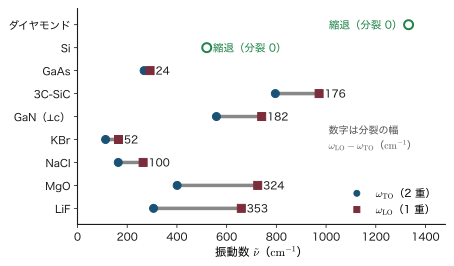
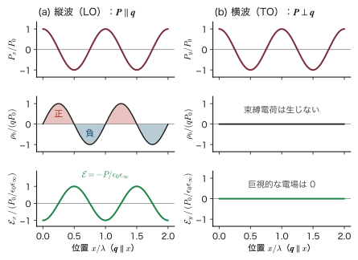
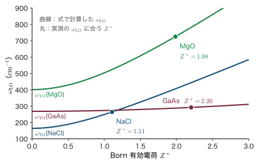
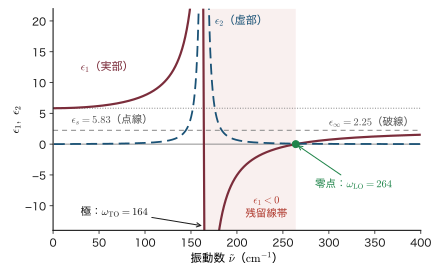
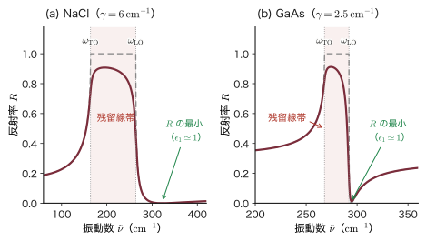
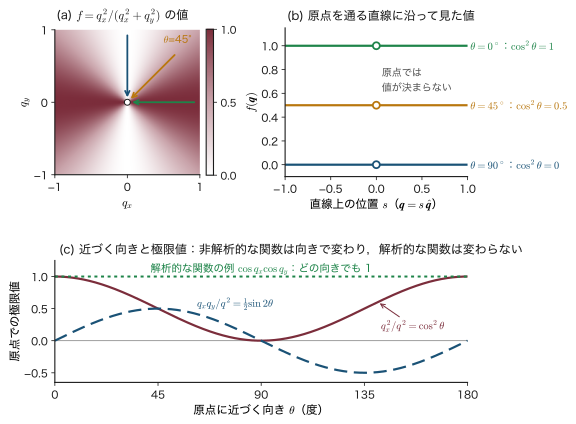
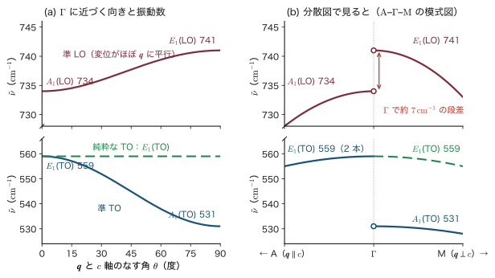
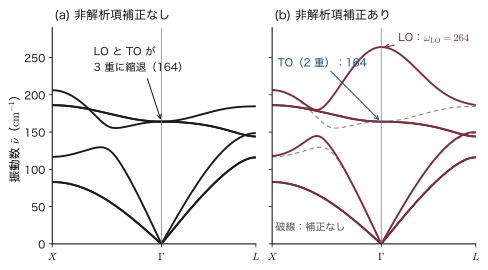
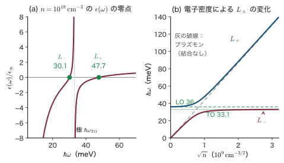
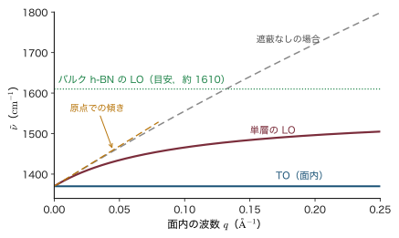

第32章縦波光学フォノンと横波光学フォノンの分裂 — LO–TO 分裂と非解析項補正
NaCl や GaAs のような極性結晶（陽イオンと陰イオンからなる結晶）の光学フォノンを測ると，$\Gamma$ 点の近くで振動数が 2 つに分かれている．変位が波の進む向きに垂直な 横波光学フォノン（transverse optical phonon，TO）は 2 重に縮退し，変位が波の進む向きに平行な 縦波光学フォノン（longitudinal optical phonon，LO）は 1 本だけ，しかも TO より高い振動数をもつ．NaCl では $164\,\mathrm{cm^{-1}}$ と $264\,\mathrm{cm^{-1}}$，6 割も違う．ところが Si やダイヤモンドでは分かれない．第11章の群論は，立方晶の $\Gamma$ 点の光学モードが 3 重に縮退すると予言していた．なぜ極性結晶でだけ，この予言が外れたように見えるのか．これが本章の出発点の LO–TO 分裂（LO–TO splitting）である．
答えを一言でいえば，縦波だけが巨視的な電場を作るからである．陽イオンと陰イオンが逆向きにずれると分極ができる．縦波では，分極の濃淡が「帯電した板」を交互に並べたような電荷の分布になり，板と板のあいだに電場が立つ．この電場がイオンを元に戻す向きに押すので，ばねが硬くなったのと同じことになり，振動数が上がる．横波では板に沿ってずれるだけなので電荷は生じない．電場は遠くまで届く長距離の力なので，波数 $\qq$ を 0 に近づけても消えず，しかも $\qq$ の 向き によって効き方が違う．群論が扱う「$\qq=0$ ちょうど」と，実験が見ている「$\qq\to0$ の極限」は同じではないのである．
この話は，第一原理フォノン計算を使うすべての人に関係する．phonopy などで極性結晶のフォノン分散を計算すると，そのままでは $\Gamma$ 点で LO と TO が縮退した，実験と合わない図が出てくる．これを直す手続きが 非解析項補正（non-analytic term correction，NAC）である．名前は難しそうだが，中身は本章の前半で導く「縦波の電場が作る力」を，動力学行列に書き足すことにすぎない．何を足しているのか，なぜ「非解析的」と呼ぶのか，補正には何（Born 有効電荷 $Z^*$ と電子の誘電率 $\epsilon_\infty$）が必要で，どこで間違えやすいのかを，絵と数値例で順に見ていく．
前後の章とのつながりを述べておく．第19章 19.6 節では Lyddane–Sachs–Teller の関係を Gauss 単位で導いた．本章は同じ内容を SI 単位で，有効電荷 $Z^*$ を主役にして導き直し，多原子・異方的な結晶の一般式（非解析項）まで進める．LO フォノンの電場は，電子を散乱し（第22章 22.3 節の Fröhlich 相互作用），電子にまとわりついてポーラロンを作る（第31章 31.7 節）．光との混成（ポラリトン）は第33章 33.10 節で，赤外吸収の強さは第34章 34.6 節で扱う．
- 極性結晶で $\omega_{\rm LO}\gt\omega_{\rm TO}$ となり，Si やダイヤモンドでは分かれないという実験事実と，その測り方（Raman，赤外反射，中性子非弾性散乱）
- 縦波の光学モードだけが束縛電荷 $\rho_b=-\nabla\cdot\bm P$ と巨視的な電場 $\EE=-\bm P_{\rm ion}/\epsilon_0\epsilon_\infty$ を作る理由（「帯電した板」の絵と Maxwell 方程式）と，分極が斜めのとき電場は $\qq$ に平行な成分だけから生じること
- 2 原子の模型による LO–TO 分裂の式 $\omega_{\rm LO}^2=\omega_{\rm TO}^2+(Z^*e)^2/(\epsilon_0\epsilon_\infty M_r\Omega)$ と Lyddane–Sachs–Teller の関係の SI 単位での完全な導出
- 誘電関数 $\epsilon(\omega)$ の極（$\omega_{\rm TO}$）と零点（$\omega_{\rm LO}$），残留線帯と赤外反射率
- Born 有効電荷テンソル $Z^*_{\kappa,\alpha\beta}$ の 2 つの定義が等しい理由，形式電荷との違い，音響総和則
- 動力学行列の非解析項 $D^{\rm NA}$ の導出と，「非解析的」（$\qq\to0$ の極限が向きによる）の意味
- 第一原理フォノン計算で非解析項補正が必要な理由と，その入力（$\epsilon_\infty$ と $Z^*$）・確かめること・間違えやすいこと
- 一軸性結晶の角度分散，自由キャリアによる遮蔽と LO フォノン–プラズモン結合，2 次元物質で分裂が消える理由
32.1 実験事実 — 極性結晶では LO と TO の振動数が違う
32.1.1 光学モードの縦波と横波
まず言葉を確かめる．単位胞に 2 個以上の原子がある結晶には，音響分枝のほかに 光学分枝（optical branch）がある（第13章 13.6 節）．長波長（$\qq\to0$）の光学モードでは，単位胞の中の原子どうしが 逆向き に動き，単位胞の重心は止まっている．NaCl なら Na$^+$ と Cl$^-$ が互いに逆向きにずれる．
波には進む向き（波数ベクトル $\qq$ の向き）と，原子が動く向き（変位の向き．その向きの単位ベクトルを 偏極ベクトル（polarization vector）という）がある．この 2 つの関係で波を分ける．
定義：縦波と横波
- 縦波（longitudinal wave）：原子の変位が $\qq$ に 平行．音波なら疎密波．光学分枝の縦波を LO（longitudinal optical）フォノンという．
- 横波（transverse wave）：原子の変位が $\qq$ に 垂直．$\qq$ に垂直な向きは 2 つあるので，横波は 2 本ある．光学分枝の横波を TO（transverse optical）フォノンという．
立方晶の高対称な方向（$[100]$，$[111]$ など）では，2 本の横波は対称性によって同じ振動数をもつ（2 重縮退）．
図32.1 で 2 つを見比べてほしい．どちらも「陽イオンと陰イオンが逆向きにずれる」点は同じで，ばねの伸び縮み（短距離の力）だけを考えれば，ずれる向きが $\qq$ に平行か垂直かで復元力が大きく変わる理由はない．実際，立方晶では $\qq=0$ の光学モードの 3 つの向き $x,y,z$ は対称操作で互いに移り合うので，第11章の群論は「$\Gamma$ 点の光学モードは 3 重縮退」と予言する（第11章 11.9 節．岩塩型（点群 $O_h$）では既約表現 $T_{1u}$．閃亜鉛鉱型（点群 $T_d$）では同じ 3 重の表現を $T_2$（$\Gamma_{15}$ とも書く）とよぶ）．ところが (b) では，陽イオンの集まる場所と陰イオンの集まる場所が縞になっている．この縞が電荷の縞になり，電場を作る——これが本章の主題である（32.2 節）．
32.1.2 実測値
表32.1 に，代表的な結晶の $\Gamma$ 点近くの光学フォノンの振動数をまとめた．分光学の慣習にしたがって，角振動数 $\omega$ の代わりに波数 $\tilde\nu=\omega/(2\pi c)$（単位 $\mathrm{cm^{-1}}$）で書き，記号は $\omega_{\rm TO}$，$\omega_{\rm LO}$ のまま使う．表に出てくる記号の意味を先にまとめておく．
記号の約束：本章の記号
- $\Omega$：単位胞の体積．第17章・第22章では $\hbar\Omega$ を光学フォノンのエネルギーに使ったが，本章の $\Omega$ はそれとは無関係である（フォノンの振動数は必ず $\omega$ と添字で書く）．面心立方の格子定数 $a$ の岩塩型・閃亜鉛鉱型では $\Omega=a^3/4$．
- $\epsilon_s$：静的比誘電率（ゆっくり変わる電場に対する比誘電率．イオンの分極も含む．第19章の $\epsilon(0)$），$\epsilon_\infty$：高周波（電子だけの）比誘電率（イオンが追随できない速い電場に対する比誘電率．第19章の $\epsilon(\infty)$）．
- 表32.1 の「GaN（$\qq\perp c$）」は，波の進む向き $\qq$ が六方晶の $c$ 軸に垂直な場合の値である（向きによって値が変わる理由は 32.6.5 項）．
- $Z^*$：Born 有効電荷（無次元．電荷は $Z^*e$）．一般には原子 $\kappa$ ごとの $3\times3$ テンソル $Z^*_{\kappa,\alpha\beta}$（32.5 節）．立方晶の 2 原子の結晶では $Z^*_{\kappa,\alpha\beta}=\pm Z^*\delta_{\alpha\beta}$．第27・28章の準粒子の重み（くりこみ因子）$Z$ とは別の量である．
- $M_r$：陽イオンと陰イオンの換算質量，$\bm w$：相対変位．$\mathcal E$：電場の大きさ・成分，$\EE$：電場ベクトル．
- 振動数を $\mathrm{cm^{-1}}$ で書くときは $\omega=2\pi c\tilde\nu$．$1\,\mathrm{meV}=8.0655\,\mathrm{cm^{-1}}$．
| 物質 | $\omega_{\rm TO}$（$\mathrm{cm^{-1}}$） | $\omega_{\rm LO}$（$\mathrm{cm^{-1}}$） | $\epsilon_s$ | $\epsilon_\infty$ | $(\omega_{\rm LO}/\omega_{\rm TO})^2$ | $\epsilon_s/\epsilon_\infty$ |
|---|---|---|---|---|---|---|
| ダイヤモンド | 1332 | 1332 | 5.7 | 5.7 | 1 | 1 |
| Si | 520 | 520 | 11.7 | 11.7 | 1 | 1 |
| GaAs | 268 | 292 | 12.9 | 10.9 | 1.187 | 1.183 |
| 3C-SiC | 796 | 972 | 9.72 | 6.52 | 1.491 | 1.491 |
| GaN（$\qq\perp c$） | 559 | 741 | 約 9.5 | 約 5.35 | 1.757 | 1.78 |
| KBr | 113 | 165 | 4.90 | 2.34 | 2.13 | 2.09 |
| NaCl | 164 | 264 | 5.90 | 2.25 | 2.59 | 2.62 |
| MgO | 401 | 725 | 約 9.8 | 2.95 | 3.27 | 3.32 |
| LiF | 306 | 659 | 約 9.0 | 1.96 | 4.64 | 4.59 |

図32.2 から次のことが読み取れる．
- 極性結晶では必ず $\omega_{\rm LO}\gt\omega_{\rm TO}$．逆の順序の例はない．
- 無極性結晶（同種原子だけ）では分裂しない．Si とダイヤモンドでは $\Gamma$ 点の光学モードは 3 重に縮退したままである（第13章 13.9 節の Ge の分散でも $\Gamma$ で LO と TO が一致していた）．
- 分裂の大きさはイオン性の目安になる．GaAs（共有結合性が強い）では 9 %，NaCl では 61 %，LiF では 2 倍以上．
- 表の最後の 2 列はほぼ等しい．これが Lyddane–Sachs–Teller の関係（リダン・サックス・テラー）$\omega_{\rm LO}^2/\omega_{\rm TO}^2=\epsilon_s/\epsilon_\infty$ で，32.3 節で導く．
例題32.1 GaAs の LO フォノンを単位換算し，LST の関係を確かめる
GaAs の $\omega_{\rm TO}=268\,\mathrm{cm^{-1}}$，$\omega_{\rm LO}=292\,\mathrm{cm^{-1}}$，$\epsilon_s=12.9$，$\epsilon_\infty=10.9$ とする．(1) $\hbar\omega_{\rm LO}$ を meV で，振動数 $\omega_{\rm LO}/2\pi$ を THz で表し，本書で使ってきた $\hbar\omega_{\rm LO}=36\,\mathrm{meV}$ と比べよ．(2) $(\omega_{\rm LO}/\omega_{\rm TO})^2$ と $\epsilon_s/\epsilon_\infty$ を比べよ．
解答．(1) $1\,\mathrm{meV}=8.0655\,\mathrm{cm^{-1}}$ だから
$$ \hbar\omega_{\rm LO}=\frac{292}{8.0655}\,\mathrm{meV}=36.2\,\mathrm{meV} $$振動数は $\omega/2\pi=c\tilde\nu$ $=(2.998\times10^{10}\,\mathrm{cm/s})\times292\,\mathrm{cm^{-1}}$ $=8.75\,\mathrm{THz}$．本書の値 $36\,\mathrm{meV}$ と一致する（TO は $268/8.0655=33.2\,\mathrm{meV}$）．
(2)
$$ \left(\frac{292}{268}\right)^2=1.0896^2=1.187,\qquad\frac{12.9}{10.9}=1.183 $$差は $0.3\,\%$ で，測定の誤差の範囲で一致する．∎ LO と TO の差は $24\,\mathrm{cm^{-1}}=3\,\mathrm{meV}$ にすぎないが，誘電率の比（イオンの分極がどれだけ足されるか）と正確に結びついている．
32.1.3 群論の予言と食い違って見える理由 — $\qq=0$ と $\qq\to0$
群論の予言（3 重縮退）と実験（2＋1 に分裂）は矛盾しているのだろうか．そうではない．群論が扱うのは「$\qq=0$ ちょうど」の状態で，3 つの向きの変位は対称操作で移り合う．ところが $\qq=0$ ちょうどの波には進む向きがないので，縦波と横波の区別そのものができない．実験が見ているのは，波長が結晶の大きさよりずっと短い，小さいが 0 ではない $\qq$ の波である．そこでは $\qq$ の向きが決まり，縦波と横波が区別できる．
図32.3 のように，分散曲線を $\Gamma$ に向けてたどると，どちらの向きから近づいても LO の枝は $\omega_{\rm LO}$ に，TO の枝は $\omega_{\rm TO}$ に近づく．枝は 1 点に集まらず，2 つの値へ別々に近づく．つまり $\qq\to0$ の極限が「LO か TO か」で違う．一方，群論が扱う $\qq=0$ ちょうどでは，進む向きが無いので縦と横の区別ができず，「どちらの値か」が決まらない．さらに後で見るように（32.6 節），どの原子の変位が「LO」になるかは $\qq$ の向きで決まる．$x$ 方向から近づけば $x$ 方向の変位が LO，$y$ 方向から近づけば $y$ 方向の変位が LO になる．これが「$\qq\to0$ の極限が向きによる」という意味であり，32.6 節で「非解析的」と呼ぶ性質の正体である．群論の予言が外れたのではなく，群論の外にある長距離の電場が，$\qq\to0$ でも消えずに残るのである．
32.1.4 どうやって測るか
LO と TO の振動数を測る方法は主に 3 つある．
- Raman 散乱（第34章）．可視光を当て，フォノンを 1 個作って振動数が下がった散乱光を分光する．光の波数は $10^5\,\mathrm{cm^{-1}}$ 程度で，Brillouin 域の大きさ（$10^8\,\mathrm{cm^{-1}}$ 程度）の約 1/1000 なので，見えるのは $\Gamma$ のごく近く，すなわち $\qq\to0$ の極限の値である．閃亜鉛鉱型の GaAs では LO と TO の 2 本の線が見え，ダイヤモンド型の Si では 3 重縮退した 1 本の線（$520\,\mathrm{cm^{-1}}$，第11章の例題11.6）だけが見える．
- 赤外反射・吸収．TO フォノンは振動する双極子をもつので赤外光と直接結合する．反射率のスペクトルには $\omega_{\rm TO}$ と $\omega_{\rm LO}$ にはさまれた高い反射の帯（残留線帯）が現れ，その両端から 2 つの振動数が読める（32.4 節）．
- 中性子非弾性散乱（第13章 13.9 節）．中性子の波数は Brillouin 域の大きさ程度なので，分散関係全体 $\omega(\qq)$ を測れる．$\Gamma$ に近づく枝をたどれば LO と TO の分裂が見える．
例題32.2 GaAs の Raman スペクトルで LO だけが見える面と TO だけが見える面
閃亜鉛鉱型の GaAs に (001) 面から光を入れ，後ろに戻ってきた光を測る（後方散乱）と，Raman スペクトルには LO の線（$292\,\mathrm{cm^{-1}}$）だけが現れ，TO の線は現れない．(110) 面からの後方散乱では逆に TO だけが現れる．Si の (001) 面では $520\,\mathrm{cm^{-1}}$ の 1 本が見える．これらの事実を，「作られるフォノンの波数ベクトル $\qq$ の向き」と「LO と TO の定義」から説明せよ（Raman テンソルの詳しい選択則は第34章 34.5.3 項で扱う）．
解答．後方散乱では，入射光の波数 $\bm k_i$ と散乱光の波数 $\bm k_s\simeq-\bm k_i$ から，運動量保存で作られるフォノンの波数は $\qq=\bm k_i-\bm k_s\simeq2\bm k_i$．(001) 面に垂直に入射すれば $\qq\parallel[001]$ である．
閃亜鉛鉱型の Raman テンソルの性質（第34章 34.5.3 項）から，(001) 後方散乱で Raman 散乱を起こせるのは $z$ 方向（$[001]$ 方向）に原子が変位する光学モードだけである．$\qq\parallel z$ だから，$z$ 方向の変位は $\qq$ に平行，すなわち LO である．$x$，$y$ 方向に変位する TO は，この配置では散乱を起こせない．(110) 面では $\qq\parallel[110]$ となり，散乱を起こせる変位の向きが $\qq$ に垂直な成分をもつので TO が見える．
Si では LO と TO が同じ振動数なので，どの面から測っても線は 1 本である．∎ 同じ結晶の同じ「$\Gamma$ 点の光学モード」でも，$\qq$ の向き（測る面）を変えると LO と TO の役割が入れ替わる．どの変位が LO になるかは $\qq$ の向きで決まることが，実験でそのまま見えている．
32.2 縦波だけが巨視的な電場を作る
32.2.1 分極の波と束縛電荷
光学モードで陽イオンと陰イオンが逆向きにずれると，単位胞ごとに小さな電気双極子ができる．単位体積あたりの双極子モーメントが 分極（polarization）$\bm P$ である．単位胞（体積 $\Omega$）に電荷 $+Z^*e$ と $-Z^*e$ のイオンがあり，相対変位が $\bm w$ なら，1 個の単位胞の双極子は $Z^*e\,\bm w$ だから，イオンのずれによる分極は
$$ \bm P_{\rm ion}=\frac{Z^*e}{\Omega}\,\bm w $$である（$Z^*$ の正確な意味は 32.5 節．ここでは「イオンの実効的な電荷」と思えばよい）．長波長の光学モード $\bm w(\rr)=\bm w_0\,\ee^{i\qq\cdot\rr}$ では，分極も同じ波 $\bm P(\rr)=\bm P_0\,\ee^{i\qq\cdot\rr}$ になる（時間の因子 $\ee^{-i\omega t}$ は省く）．波長は格子間隔よりずっと長いので，$\bm P(\rr)$ は単位胞の大きさで平均した滑らかな場と考えてよい．
分極が場所によって違うと，電荷がたまる．電磁気学で学んだように，分極 $\bm P$ が作る 束縛電荷（bound charge．分極電荷ともいう）の密度は
である．
導出：$\rho_b=-\nabla\cdot\bm P$ と，分極の波の束縛電荷
ステップ1：1 次元で考える．$x$ 方向に分極した薄い層を考え，位置 $x$ の断面を通って右へ移った電荷の面密度を $P_x(x)$ とする（分極とは，正電荷が $+x$ へ，負電荷が $-x$ へ少しずれた結果，断面を横切った正味の電荷の面密度である）．幅 $\dd x$ の薄い層 $[x,x+\dd x]$ には，左の面から $P_x(x)$ だけ入り，右の面から $P_x(x+\dd x)$ だけ出ていく．たまる電荷の面密度は
$$ P_x(x)-P_x(x+\dd x)=-\frac{\dd P_x}{\dd x}\,\dd x $$で，これを層の厚さ $\dd x$ で割ったものが体積密度 $\rho_b=-\dd P_x/\dd x$ である．3 次元では 3 方向の和をとって $\rho_b=-\nabla\cdot\bm P$．
ステップ2：波に当てはめる．$\bm P=\bm P_0\,\ee^{i\qq\cdot\rr}$ を微分すると $\nabla\ee^{i\qq\cdot\rr}=i\qq\,\ee^{i\qq\cdot\rr}$ なので
$$ \rho_b=-\nabla\cdot\bm P=-i\qq\cdot\bm P_0\,\ee^{i\qq\cdot\rr} $$ステップ3：縦波と横波．$\qq\cdot\bm P_0$ は，$\bm P_0$ のうち $\qq$ に平行な成分だけを拾う．
- 縦波（$\bm P_0\parallel\qq$）：$\qq\cdot\bm P_0=qP_0\ne0$．電荷の濃淡ができる．
- 横波（$\bm P_0\perp\qq$）：$\qq\cdot\bm P_0=0$．電荷はどこにもたまらない．∎
この結果を絵にしたものが図32.4 である．縦波では，$\bm P$ が $\qq$ の向きに強くなったり弱くなったりするので，$\bm P$ が「流れ込む」面には正の，「流れ出す」面には負の束縛電荷がたまる．$\qq$ に垂直な面に電荷がたまるので，長波長の LO フォノンは 正と負に帯電した板が交互に並んだコンデンサーの列 とみなせる．横波では $\bm P$ が板に沿っているだけで，どの板にも電荷が出入りしない．
32.2.2 Maxwell 方程式から — 縦波では $\bm D=0$，横波では $\EE=0$
板の間の電場の大きさを，Maxwell 方程式から正確に求める．イオンのずれのほかに，各イオンの電子雲も電場で分極する．電子は軽く，光学フォノンの振動数ではすぐ追随するので，電子の分極は比誘電率 $\epsilon_\infty$ でまとめられる：$\bm P_{\rm el}=\epsilon_0(\epsilon_\infty-1)\EE$．全分極は $\bm P=\bm P_{\rm ion}+\bm P_{\rm el}$，電束密度は
$$ \bm D=\epsilon_0\EE+\bm P=\epsilon_0\epsilon_\infty\EE+\bm P_{\rm ion} $$である．
導出：電場は $\qq$ に平行な分極の成分だけから生じる — 縦波では $\EE=-\bm P_{\rm ion}/\epsilon_0\epsilon_\infty$，横波では $\EE=0$
ここでは立方晶を考え，$\epsilon_\infty$ は向きによらない数（スカラー）とする．分極の波 $\bm P_{\rm ion}=\bm P_0\,\ee^{i\qq\cdot\rr}$ の向きは $\qq$ に平行でも垂直でも斜めでもよい．
ステップ1：Gauss の法則．結晶の中に自由電荷（伝導電子など）はないとする．Maxwell 方程式の 1 つ $\nabla\cdot\bm D=\rho_{\rm free}=0$ に $\bm D=\bm D_0\,\ee^{i\qq\cdot\rr}$ を入れると，$\nabla\ee^{i\qq\cdot\rr}=i\qq\,\ee^{i\qq\cdot\rr}$ より
$$ i\qq\cdot\bm D_0=0\qquad\Longrightarrow\qquad\qq\cdot\bm D=0 $$すなわち $\bm D$ には $\qq$ に平行な成分がない．
ステップ2：Faraday の法則 — 電場は $\qq$ に平行．$\nabla\times\EE=-\partial\BB/\partial t$ に平面波を入れると $i\qq\times\EE=i\omega\BB$，すなわち $\abs{\qq\times\EE}=\omega\abs{\BB}$．電場と磁場は光速で結びつくので $\abs{\BB}\sim\abs{\EE}/c$ の程度で，
$$ \abs{\qq\times\EE}\sim\frac{\omega}{c}\abs{\EE} $$フォノンの波数 $q$ が光の波数 $\omega/c$ よりずっと大きければ（$cq\gg\omega$．「遅延（retardation）を無視する」という），右辺は左辺の大きさの目安 $q\abs{\EE}$ に比べて無視でき，$\qq\times\EE\simeq0$ となる．外積が 0 なので $\EE$ は $\qq$ に平行で，$\qq$ の向きの単位ベクトル $\hat{\qq}=\qq/q$ を使って $\EE=\mathcal{E}\,\hat{\qq}$ と書ける．
ステップ3：2 つを合わせる．$\bm D=\epsilon_0\epsilon_\infty\EE+\bm P_{\rm ion}$ と $\hat{\qq}$ の内積をとり，ステップ1（$\hat{\qq}\cdot\bm D=0$）とステップ2（$\hat{\qq}\cdot\EE=\mathcal{E}$）を使うと
$$ \epsilon_0\epsilon_\infty\,\mathcal{E}+\hat{\qq}\cdot\bm P_{\rm ion}=0 \qquad\Longrightarrow\qquad \mathcal{E}=-\frac{\hat{\qq}\cdot\bm P_{\rm ion}}{\epsilon_0\epsilon_\infty} $$$\EE=\mathcal{E}\,\hat{\qq}$ に戻して
（電子の分極も含めた全分極 $\bm P=\bm P_{\rm ion}+\epsilon_0(\epsilon_\infty-1)\EE$ で書けば，$\bm D=\epsilon_0\EE+\bm P$ から同じ手順で $\EE=-\hat{\qq}(\hat{\qq}\cdot\bm P)/\epsilon_0$ となる．）
ステップ4：縦波．$\bm P_{\rm ion}\parallel\qq$ なら $\hat{\qq}(\hat{\qq}\cdot\bm P_{\rm ion})=\bm P_{\rm ion}$ なので
このとき $\bm D=\epsilon_0\epsilon_\infty\EE_{\rm LO}+\bm P_{\rm ion}=0$ である．
ステップ5：横波．$\bm P_{\rm ion}\perp\qq$ なら $\hat{\qq}\cdot\bm P_{\rm ion}=0$ なので
$$ \EE_{\rm TO}=0 $$∎
式 \eqref{eq:32-Eproj} を言葉で読むと，電場は分極のうち $\qq$ に平行な成分 $\bm P_\parallel=\hat{\qq}(\hat{\qq}\cdot\bm P_{\rm ion})$ だけを拾い，それと逆向きに $\qq$ に平行に生じる．$\qq$ に垂直な成分は波面（板）に沿って流れるだけで電荷をためないので，電場に効かない（図32.4(c)）．縦波（全部が平行な成分）と横波（全部が垂直な成分）はその両極端である．もう 1 つ大事なことは，式 \eqref{eq:32-Eproj} には $\qq$ の大きさ $q$ が入らず，向き $\hat{\qq}$ だけが入る ことである．$q\to0$ としても電場は消えず，しかもその値は $\qq$ をどの向きから 0 に近づけたかで違う．32.6 節で「非解析的」とよぶ性質の正体は，すでにこの式に現れている．
式 \eqref{eq:32-ELO} がこの章のすべての出発点である．符号に注意してほしい．電場は分極と逆向きである．分極が $+x$ を向く場所では，陽イオンが $+x$ に，陰イオンが $-x$ にずれている．そこに $-x$ 向きの電場がかかれば，陽イオンは $-x$ に，陰イオンは $+x$ に押され，どちらもつり合いの位置へ引き戻される．短距離のばねに加えて電場が復元力を足すので，縦波の振動数は横波より高くなる．これが $\omega_{\rm LO}\gt\omega_{\rm TO}$ の理由である．
電子の分極を入れる前（$\epsilon_\infty=1$）なら $\EE_{\rm LO}=-\bm P_{\rm ion}/\epsilon_0$ である．電子雲が逆向きに分極してイオンの電荷を部分的に打ち消す（遮蔽する）ので，実際の電場は $1/\epsilon_\infty$ に弱まる．

例題32.3 GaAs の LO フォノンが作る電場と束縛電荷
GaAs（$Z^*=2.2$，格子定数 $a=5.653\,\text{Å}$，$\epsilon_\infty=10.9$）で，Ga と As の相対変位の振幅が $w_0=0.01\,\text{Å}$ の LO フォノン（波長 $\lambda=100\,\mathrm{nm}$）を考える．(1) イオンの分極の振幅 $P_0$ を求めよ．(2) 電場の振幅を求め，電子の遮蔽がない場合と比べよ．(3) 束縛電荷の密度の振幅を，電気素量の何個 / $\mathrm{cm^3}$ かで表せ．
解答．(1) 単位胞の体積は $\Omega=a^3/4$ $=(5.653\times10^{-10}\,\mathrm{m})^3/4$ $=4.516\times10^{-29}\,\mathrm{m^3}$．
$$ P_0=\frac{Z^*e\,w_0}{\Omega}=\frac{2.2\times1.602\times10^{-19}\,\mathrm{C}\times1.0\times10^{-12}\,\mathrm{m}}{4.516\times10^{-29}\,\mathrm{m^3}}=7.80\times10^{-3}\,\mathrm{C/m^2} $$（$0.78\,\mu\mathrm{C/cm^2}$．強誘電体 BaTiO$_3$ の自発分極 $26\,\mu\mathrm{C/cm^2}$ の約 3 % である．）
(2) 式 \eqref{eq:32-ELO} より
$$ \mathcal{E}_0=\frac{P_0}{\epsilon_0\epsilon_\infty}=\frac{7.80\times10^{-3}}{8.854\times10^{-12}\times10.9}\,\mathrm{V/m}=8.1\times10^{7}\,\mathrm{V/m} $$電子の遮蔽がなければ $P_0/\epsilon_0=8.8\times10^{8}\,\mathrm{V/m}$ で，10.9 倍大きい．
(3) $q=2\pi/\lambda$ $=6.28\times10^{7}\,\mathrm{m^{-1}}$ なので
$$ \abs{\rho_b}=qP_0=6.28\times10^{7}\times7.80\times10^{-3}\,\mathrm{C/m^3}=4.9\times10^{5}\,\mathrm{C/m^3} $$電気素量で割ると $3.1\times10^{24}\,\mathrm{m^{-3}}=3.1\times10^{18}\,\mathrm{cm^{-3}}$．∎ 原子の変位は格子定数の 0.2 % にすぎないのに，電場は $10^8\,\mathrm{V/m}$ 近くになる（半導体の絶縁破壊の電場は $10^7\,\mathrm{V/m}$ 程度）．束縛電荷の密度は 1 単位胞あたり $10^{-4}$ 個にすぎないが，それが「板」として何層も並ぶので強い電場になる．この電場が伝導電子を散乱するのが第22章の Fröhlich 相互作用である（22.3 節）．
補足：第19章（Gauss 単位）との対応
第19章 19.6.1 項では，同じ結論を Gauss 単位で $\EE_{\rm LO}=-4\pi\bm P$，$\EE_{\rm TO}=0$ と書いた．SI と Gauss の読み替えは $\bm D=\epsilon_0\EE+\bm P\ \leftrightarrow\ \bm D=\EE+4\pi\bm P$，すなわち「$1/\epsilon_0\to4\pi$」である．第19章の式は電子の分極も $\bm P$ に含めた形（$\bm D=0$ から $\EE=-4\pi\bm P$）で，本章の式 \eqref{eq:32-ELO} は電子の分を $\epsilon_\infty$ に入れてイオンの分だけを $\bm P_{\rm ion}$ と書いた形である．2 つは $\bm P=\bm P_{\rm ion}+\epsilon_0(\epsilon_\infty-1)\EE$ を代入すれば一致する．
遅延を無視しない場合，すなわち $q$ が光の波数 $\omega/c$ と同じ程度まで小さい場合には，横波の電場は 0 でなくなり，TO フォノンと光が混ざり合う．これが フォノン・ポラリトン で，第33章 33.10 節で扱う．そこで分かるように，$q\sim\omega/c$ は Brillouin 域の大きさの約 $10^{-4}$ という極めて狭い範囲で，フォノン分散の図では $\Gamma$ 点に押し込まれている．本章では以後，遅延を無視する（$cq\gg\omega$）．
動かして確かめる：縦波と横波の束縛電荷と電場
NaCl の (001) 面（Na$^+$ は琥珀，Cl$^-$ は緑）で，$\qq\parallel x$ の長波長の光学モードが振動する様子をアニメーションで見る．「波の種類」で縦波 LO と横波 TO を切り替えると，LO でだけ束縛電荷の濃淡（赤＝正の板，青＝負の板）と，分極 $\bm P$ と逆向きの巨視的な電場が現れ，TO では「$\EE=0$」「$\rho_b=0$」となることを確かめよう（図32.4，図32.5）．3 つめの「斜め（45°）」は LO と TO を同じ振幅で重ねた斜めの分極で，分極のうち $\qq$ に平行な成分 $\bm P_\parallel$ だけが板に電荷をため，電場は $\qq$ に平行に生じる（式 \eqref{eq:32-Eproj}，図32.4(c)）．画面の式 $\EE=-\bm P/\epsilon_0\epsilon_\infty$ の $\bm P$ は，本文の式 \eqref{eq:32-ELO} と同じくイオンの変位による分極 $\bm P_{\rm ion}$ である．「一時停止」と「1/8 周期進める」で，電荷の板が分極の山と谷から 1/4 波長ずれた位置にできることをこま送りで見るとよい．「波長 λ」（格子定数 $a$ の 6〜24 倍）のつまみで波長を変えると，電荷の縞の間隔は変わるが，電場の強さを決める式 \eqref{eq:32-ELO} には波長が入っていないことにも注意してほしい（32.2.3 項）．
32.2.3 なぜ $\qq\to0$ でも消えないのか — 長距離力と試料の形
図32.5 や例題32.3 で，電場の大きさ $P_0/\epsilon_0\epsilon_\infty$ に 波長が入っていない ことに気づいただろうか．束縛電荷の密度 $qP_0$ は波長が長いほど薄くなるが，そのぶん板の間隔が広がり，電場は変わらない．だから $\qq\to0$ でも電場による復元力は残り，LO の振動数は $\omega_{\rm TO}$ に戻らない．
これは，双極子どうしの相互作用が 長距離 であることの表れである．1 個の双極子 $\bm p$ が距離 $r$ に作る電場は $1/r^3$ でしか減らない．結晶の中のすべての双極子からの電場を足すとき，半径 $R$ の球殻の中の双極子の数は $R^2\,\dd R$ に比例するので，和は $\int R^2\cdot R^{-3}\,\dd R=\int\dd R/R$ の形になり，遠くの寄与が小さくならない（大きさだけを足すと $\ln R$ のように増え続ける）．それでも和が有限の値に落ち着くのは，1 個の双極子の電場 $\propto[3(\bm p\cdot\hat{\rr})\hat{\rr}-\bm p]/r^3$ が，球殻の上で向きについて平均すると 0 になり（$\hat{\rr}$ の成分の 2 乗の平均は $1/3$ なので $3\times\tfrac13\bm p-\bm p=0$），同じ球殻の中の正と負の寄与が打ち消し合うからである．ところが，この打ち消し合いは球殻が「欠けずに」そろっているときにしか起こらない．遠くの境界が球でなければ，欠けた部分の寄与が距離によらない大きさで残る．数学でいう 条件収束（足す順序で和の値が変わる）であり，その結果，和の値は「どういう形に足していくか」——すなわち試料の形や分極の波面の向き——に依存する．この事情を Fourier 変換の言葉で数行で示すのが 32.6.4 項である．
図32.6 は，第19章 19.1 節の 反電場（脱分極場）と同じ理屈である．一様に分極した試料の中の電場は，分極の大きさだけでなく試料の形で決まり，薄い板を面に垂直に分極させると反電場は最大の $-\bm P/\epsilon_0$，板に沿って分極させると 0 になる．長波長の分極の波の 1 つの波面は，$\qq$ に垂直な無限に広い薄い板とみなせる．LO は「板に垂直に分極した板」，TO は「板に沿って分極した板」である．LO と TO の違いは，反電場が試料の形で違うことの，波の場合の言い換え なのである．そして $\qq$ の向きを変えることは板の向きを変えることなので，$\qq\to0$ の極限の値が $\qq$ の向きによることも自然に理解できる．
例題32.4 横波では電荷がたまらないことを Gauss の法則で確かめる
$\qq\parallel x$ の横波で，分極が $P_y(x)=P_0\cos qx$（$y$ 方向）のとき，$x$ に垂直な面（波面）の上に，面に沿った大きさ $A$ の薄い箱（底面が $x=x_0\pm\delta$ の 2 枚）を考える．箱の中の束縛電荷を，箱の表面を横切る分極の流れから求め，0 になることを示せ．同じことを縦波 $P_x(x)=P_0\cos qx$ で行い，$\rho_b=qP_0\sin qx_0$ を再現せよ．
解答．箱の中にたまる束縛電荷は，表面から出ていく分極の流れ（$\bm P$ の面積分）にマイナスを付けたもの：$Q_b=-\oint\bm P\cdot\dd\bm S$．
横波：$\bm P=(0,P_y(x),0)$．$x=x_0\pm\delta$ の 2 枚の底面の法線は $\pm\hat{\bm x}$ で，$\bm P\cdot\hat{\bm x}=0$ だから寄与しない．側面のうち $y$ に垂直な 2 面では $\bm P\cdot(\pm\hat{\bm y})=\pm P_y(x)$ だが，同じ $x$ の範囲で向かい合う 2 面の寄与は打ち消し合う（$P_y$ は $y$ によらない）．よって $Q_b=0$．
縦波：$\bm P=(P_x(x),0,0)$．側面は寄与せず，2 枚の底面から
$$ Q_b=-\bigl[P_x(x_0+\delta)-P_x(x_0-\delta)\bigr]A\simeq-\frac{\dd P_x}{\dd x}\Big|_{x_0}2\delta\,A=qP_0\sin qx_0\times2\delta A $$体積 $2\delta A$ で割って $\rho_b=qP_0\sin qx_0$．∎ 横波では分極が「波面に沿って流れる」だけで，どの箱にも出入りの差がない．縦波では波面を横切る流れの量が場所で違うので，その差が電荷としてたまる．
32.3 LO–TO 分裂の式と Lyddane–Sachs–Teller の関係
32.2 節の絵を式にする．使うのは，イオンの運動方程式と分極の式の 2 本だけである．同じ内容は第19章 19.6 節で Gauss 単位と局所場（Lorentz 場）を使って導いたが，ここでは第一原理計算と直接つながる Born 有効電荷 $Z^*$ を主役にして，SI 単位で導き直す．
32.3.1 模型 — 2 原子の立方晶
NaCl や GaAs のように，単位胞に陽イオンと陰イオンが 1 個ずつある立方晶を考える（図32.7）．長波長の光学モードでは単位胞の重心は止まっているので，相対変位 $\bm w=\uu_+-\uu_-$ だけが変数になる．
導出1：相対変位の運動方程式
陽イオン（質量 $M_+$，変位 $\uu_+$）と陰イオン（質量 $M_-$，変位 $\uu_-$）がばね定数 $K$ のばねで結ばれ，電場 $\EE$ の中にある．Newton の運動方程式は
$$ M_+\ddot{\uu}_+=-K(\uu_+-\uu_-)+Z^*e\EE,\qquad M_-\ddot{\uu}_-=-K(\uu_--\uu_+)-Z^*e\EE $$第 1 式を $M_+$ で，第 2 式を $M_-$ で割って辺々引くと
$$ \ddot{\uu}_+-\ddot{\uu}_-=-K\left(\frac{1}{M_+}+\frac{1}{M_-}\right)(\uu_+-\uu_-)+Z^*e\left(\frac{1}{M_+}+\frac{1}{M_-}\right)\EE $$換算質量 $M_r$ を $1/M_r=1/M_++1/M_-$ で定義し，両辺に $M_r$ を掛ける．$K=M_r\omega_{\rm TO}^2$ と書けば（意味はすぐあとで分かる）
∎ 第 13 章の 2 原子鎖の $\Gamma$ 点の光学モード（$\omega^2=K/M_r$ の形）に，電場の力を足したものである．
分極は，32.2 節で見たとおりイオンのずれの分と電子雲の分の和である：
補足：局所場（Lorentz 場）はどこへ行ったか
第19章 19.2 節では，イオンが感じる電場は巨視的な電場 $\EE$ ではなく，周りの双極子の寄与を足した局所場 $\EE_{\rm loc}=\EE+\bm P/3\epsilon_0$（SI）だと強調した．式 \eqref{eq:32-eom}，\eqref{eq:32-pol} には局所場が現れないが，これは近似ではなく 書き方の違い である．第19章 19.6.2 項の 3 本の式（運動方程式・分極・局所場）から $\EE_{\rm loc}$ を消去すると，ちょうど式 \eqref{eq:32-eom}，\eqref{eq:32-pol} の形になり，係数が
$$ Z^*e=e^*\,\frac{\epsilon_\infty+2}{3},\qquad \omega_{\rm TO}^2=\omega_0^2-\frac{e^{*2}}{3\epsilon_0M_r\Omega}\cdot\frac{\epsilon_\infty+2}{3} $$に置き換わる（第 1 式は第19章 19.6.2 項で Born 有効電荷を定義した式 $Z^*e\equiv e^*(\epsilon(\infty)+2)/3$ そのものである．$e^*$ は「裸の」イオンの電荷，$\omega_0$ は局所場を入れる前のばねの振動数）．つまり本章の $Z^*$ と $\omega_{\rm TO}$ は，局所場の効果を すでに含んだ 量である．$\omega_{\rm TO}$ は実測できる量であり，$Z^*$ は第一原理計算で直接求まる量（32.5 節）なので，この書き方のほうが実用的である．
32.3.2 横波と縦波の振動数
導出2：$\omega_{\rm TO}$ と $\omega_{\rm LO}$
振動 $\bm w\propto\ee^{-i\omega t}$ を考えると $\ddot{\bm w}=-\omega^2\bm w$．式 \eqref{eq:32-eom} は
$$ -M_r\omega^2\bm w=-M_r\omega_{\rm TO}^2\bm w+Z^*e\EE $$横波．32.2 節より $\EE=0$．すると $\omega^2=\omega_{\rm TO}^2$．ばね定数を $K=M_r\omega_{\rm TO}^2$ と書いた理由がこれで，$\omega_{\rm TO}$ は短距離の力だけで決まる振動数 である．
縦波．32.2 節より $\bm D=\epsilon_0\EE+\bm P=0$．式 \eqref{eq:32-pol} を入れると
$$ \epsilon_0\EE+\frac{Z^*e}{\Omega}\bm w+\epsilon_0(\epsilon_\infty-1)\EE =\epsilon_0\epsilon_\infty\EE+\frac{Z^*e}{\Omega}\bm w=0 \qquad\Longrightarrow\qquad \EE=-\frac{Z^*e}{\epsilon_0\epsilon_\infty\Omega}\,\bm w $$（式 \eqref{eq:32-ELO} と同じ）．これを運動方程式に入れる：
$$ -M_r\omega^2\bm w=-M_r\omega_{\rm TO}^2\bm w-\frac{(Z^*e)^2}{\epsilon_0\epsilon_\infty\Omega}\bm w $$両辺を $-M_r\bm w$ で割って
∎
式 \eqref{eq:32-wLO} の第 2 項が，LO の電場がイオンを引き戻すことによる「余分のばね」である．読み方を整理しておく．
- $(Z^*e)^2$：イオンが電荷をもつほど，分極も電場も力も大きい．電荷が 2 回（分極を作るときと力を受けるとき）効くので 2 乗．$Z^*=0$ の Si では分裂しない．
- $1/\epsilon_\infty$：電子雲がイオンの電荷を遮蔽するほど，電場は弱い．
- $1/M_r$：重いイオンほど，同じ力で動きにくい．
- $1/\Omega$：単位胞が大きいほど，同じ双極子でも分極（単位体積あたり）は薄い．
32.3.3 静的誘電率
導出3：静的比誘電率 $\epsilon_s$
ゆっくり変わる一様な電場 $\EE$ をかける（$\omega\to0$．一様なので $\qq=0$ で，Maxwell の条件 $\bm D=0$ などは課さない．$\EE$ は外から与える）．式 \eqref{eq:32-eom} で $\ddot{\bm w}=0$ とおくと，つり合いの相対変位は
$$ \bm w=\frac{Z^*e}{M_r\omega_{\rm TO}^2}\,\EE $$これを式 \eqref{eq:32-pol} に入れて
$$ \bm P=\frac{(Z^*e)^2}{\Omega M_r\omega_{\rm TO}^2}\,\EE+\epsilon_0(\epsilon_\infty-1)\EE $$比誘電率は $\epsilon_s=1+P/(\epsilon_0\mathcal{E})$ なので
∎ 第 2 項がイオンのずれによる分極の寄与（イオン分極）で，第19章 19.6.2 項の Born 有効電荷の式（Gauss 単位の $\epsilon(0)-\epsilon(\infty)=4\pi N(Z^*e)^2/(\mu\,\omega_{TO}^2)$．下の補足）の SI 版である．
32.3.4 Lyddane–Sachs–Teller の関係
定理32.1 Lyddane–Sachs–Teller の関係（1941）
光学モードが 1 組の立方晶では，
証明
式 \eqref{eq:32-epss} の両辺を $\epsilon_\infty$ で割ると
$$ \frac{\epsilon_s}{\epsilon_\infty}=1+\frac{(Z^*e)^2}{\epsilon_0\epsilon_\infty M_r\Omega\,\omega_{\rm TO}^2} $$式 \eqref{eq:32-wLO} の両辺を $\omega_{\rm TO}^2$ で割ると
$$ \frac{\omega_{\rm LO}^2}{\omega_{\rm TO}^2}=1+\frac{(Z^*e)^2}{\epsilon_0\epsilon_\infty M_r\Omega\,\omega_{\rm TO}^2} $$右辺が同じなので左辺も等しい．∎
証明の要点は，LO の振動数を上げる「余分のばね」と，静的な誘電率を上げる「イオン分極」が，同じ量 $(Z^*e)^2/(\epsilon_0M_r\Omega)$ から来ている ことである．イオンが電荷をもって動けるからこそ，静電場に対してイオンが分極し（$\epsilon_s\gt\epsilon_\infty$），縦波では自分の分極の電場に引き戻される（$\omega_{\rm LO}\gt\omega_{\rm TO}$）．表32.1 の最後の 2 列の一致がこの関係の確認であった．$Z^*$ や $M_r$，$\Omega$ が式から消えているので，LST の関係は模型の細部によらない．じつは因果律だけを使っても導ける頑丈な関係である（第19章 19.6.3 項）．
補足：第19章（Gauss 単位）の式との対応
第19章 19.6.2 項では Born 有効電荷の式を $\epsilon(0)-\epsilon(\infty)=4\pi N(Z^*e)^2/(\mu\,\omega_{TO}^2)$ と書いた（$N$ は単位胞の数密度，$\mu$ は換算質量）．$N=1/\Omega$，$\mu=M_r$，$\epsilon(0)=\epsilon_s$，$\epsilon(\infty)=\epsilon_\infty$ と読み替え，「$4\pi\to1/\epsilon_0$」とすれば式 \eqref{eq:32-epss} になる．LST の関係は比誘電率の比なので，どちらの単位系でも同じ形である．第22章 22.3.1 項では，相対変位を規格化した $w$ と結合定数 $\beta$ で同じ計算をした．対応は $\beta^2=(Z^*e)^2/(M_r\Omega)$ である．
32.3.5 数値で確かめる
例題32.5 GaAs の $Z^*$ から LO の振動数を計算する
GaAs の Born 有効電荷は $Z^*\approx2.2$ である．$\omega_{\rm TO}=268\,\mathrm{cm^{-1}}$，$\epsilon_\infty=10.9$，格子定数 $a=5.653\,\text{Å}$，原子量 Ga 69.723，As 74.922 として，式 \eqref{eq:32-wLO} から $\omega_{\rm LO}$ を求め，実測の $292\,\mathrm{cm^{-1}}$ と比べよ．
解答．換算質量と単位胞の体積：
$$ M_r=\frac{69.723\times74.922}{69.723+74.922}\,\mathrm{u}=36.12\,\mathrm{u}=36.12\times1.6605\times10^{-27}\,\mathrm{kg}=5.997\times10^{-26}\,\mathrm{kg} $$ $$ \Omega=\frac{a^3}{4}=\frac{(5.653\times10^{-10}\,\mathrm{m})^3}{4}=4.516\times10^{-29}\,\mathrm{m^3} $$第 2 項の分子と分母：
$$ (Z^*e)^2=(2.2\times1.602\times10^{-19}\,\mathrm{C})^2=1.242\times10^{-37}\,\mathrm{C^2} $$ $$ \epsilon_0\epsilon_\infty M_r\Omega=8.854\times10^{-12}\times10.9\times5.997\times10^{-26}\times4.516\times10^{-29}=2.614\times10^{-64}\ (\mathrm{SI}) $$ $$ \frac{(Z^*e)^2}{\epsilon_0\epsilon_\infty M_r\Omega}=4.75\times10^{26}\,\mathrm{s^{-2}} $$（単位は $\mathrm{C^2}/(\mathrm{F\,m^{-1}}\cdot\mathrm{kg}\cdot\mathrm{m^3})=\mathrm{C^2}/(\mathrm{F\,kg\,m^2})$．$\mathrm{F}=\mathrm{C^2/J}$，$\mathrm{J}=\mathrm{kg\,m^2/s^2}$ を使うと $\mathrm{s^{-2}}$ になる．）これを波数に直すと，$\sqrt{4.75\times10^{26}}\,\mathrm{s^{-1}}/(2\pi c)$ $=2.18\times10^{13}/(1.884\times10^{11}\,\mathrm{cm/s})$ $=115.7\,\mathrm{cm^{-1}}$．したがって
$$ \omega_{\rm LO}=\sqrt{268^2+115.7^2}\,\mathrm{cm^{-1}}=\sqrt{71824+13386}\,\mathrm{cm^{-1}}=291.9\,\mathrm{cm^{-1}} $$∎ 実測の $292\,\mathrm{cm^{-1}}$ とよく合う．第 2 項は $\omega_{\rm TO}^2$ の 19 % にすぎず，GaAs の分裂が小さいのは，$\epsilon_\infty=10.9$ という大きな電子の遮蔽と，重い原子（大きい $M_r$）のためである．
例題32.6 NaCl の LO–TO 分裂から $Z^*$ を逆算する
NaCl の $\omega_{\rm TO}=164\,\mathrm{cm^{-1}}$，$\omega_{\rm LO}=264\,\mathrm{cm^{-1}}$，$\epsilon_\infty=2.25$，$a=5.64\,\text{Å}$，原子量 Na 22.990，Cl 35.453 から，Born 有効電荷 $Z^*$ を求めよ．形式電荷 1 と比べよ．
解答．式 \eqref{eq:32-wLO} を $Z^*$ について解くと
$$ (Z^*)^2=\frac{(\omega_{\rm LO}^2-\omega_{\rm TO}^2)\,\epsilon_0\epsilon_\infty M_r\Omega}{e^2} $$各量を SI で求める．$\omega=2\pi c\tilde\nu$ より $\omega_{\rm LO}=4.973\times10^{13}\,\mathrm{s^{-1}}$，$\omega_{\rm TO}=3.089\times10^{13}\,\mathrm{s^{-1}}$ で，
$$ \omega_{\rm LO}^2-\omega_{\rm TO}^2=2.473\times10^{27}-0.954\times10^{27}=1.519\times10^{27}\,\mathrm{s^{-2}} $$ $$ \begin{aligned} &M_r=\frac{22.990\times35.453}{58.443}\,\mathrm{u}=13.95\,\mathrm{u}=2.316\times10^{-26}\,\mathrm{kg},\\ &\Omega=\frac{(5.64\times10^{-10})^3}{4}\,\mathrm{m^3}=4.485\times10^{-29}\,\mathrm{m^3} \end{aligned} $$ $$ (Z^*)^2=\frac{1.519\times10^{27}\times8.854\times10^{-12}\times2.25\times2.316\times10^{-26}\times4.485\times10^{-29}}{(1.602\times10^{-19})^2}=1.22 $$よって $Z^*=1.11$．∎ 形式電荷 1 にかなり近い．NaCl はほぼ理想的なイオン結晶で，イオンが動いても電子雲はイオンと一緒に動くだけで，余分な電荷の流れがほとんどない．第19章 19.6.2 項では $\epsilon_s-\epsilon_\infty$ から $Z^*=1.12$ を得た．差は表32.1 の LST の比のずれ（約 1 %）の分である．

例題32.7 MgO と Si
(1) MgO（$\omega_{\rm TO}=401\,\mathrm{cm^{-1}}$，$\epsilon_\infty=2.95$，$a=4.21\,\text{Å}$，Mg 24.305，O 15.999）について，$Z^*=1.98$ として $\omega_{\rm LO}$ を求めよ．(2) Si について式 \eqref{eq:32-wLO}，\eqref{eq:32-epss} は何を予言するか．
解答．(1) $M_r=24.305\times15.999/40.304\,\mathrm{u}=9.648\,\mathrm{u}$ $=1.602\times10^{-26}\,\mathrm{kg}$，$\Omega=(4.21\times10^{-10})^3/4\,\mathrm{m^3}$ $=1.865\times10^{-29}\,\mathrm{m^3}$．
$$ \begin{aligned} \frac{(Z^*e)^2}{\epsilon_0\epsilon_\infty M_r\Omega}&=\frac{(1.98\times1.602\times10^{-19})^2}{8.854\times10^{-12}\times2.95\times1.602\times10^{-26}\times1.865\times10^{-29}}\\ &=\frac{1.006\times10^{-37}}{7.80\times10^{-66}}=1.29\times10^{28}\,\mathrm{s^{-2}} \end{aligned} $$第 2 項を波数に直すと
$$ \frac{\sqrt{1.29\times10^{28}}\,\mathrm{s^{-1}}}{1.884\times10^{11}\,\mathrm{cm/s}}=603\,\mathrm{cm^{-1}} $$より，$(603\,\mathrm{cm^{-1}})^2$ に当たる．
$$ \omega_{\rm LO}=\sqrt{401^2+603^2}\,\mathrm{cm^{-1}}=\sqrt{160801+363609}\,\mathrm{cm^{-1}}=724\,\mathrm{cm^{-1}} $$実測 $725\,\mathrm{cm^{-1}}$ とよく合う．「余分のばね」が元のばね $\omega_{\rm TO}^2$ の 2.3 倍もあり，LO の振動数は TO の 1.8 倍になる．
(2) Si の単位胞の 2 個の原子は同じ種類で，対称性（反転中心）によって互いに移り合う．2 個の Born 有効電荷は等しくなければならず，しかも 32.5 節の音響総和則で和が 0 なので，$Z^*=0$．式 \eqref{eq:32-wLO} は $\omega_{\rm LO}=\omega_{\rm TO}$，式 \eqref{eq:32-epss} は $\epsilon_s=\epsilon_\infty$ を予言する．∎ 表32.1 の Si の行（$520=520$，$11.7=11.7$）がその確認である．Si の誘電率はすべて電子の分極によるもので，イオン分極は無い．
32.3.6 ソフトモードとの関係
式 \eqref{eq:32-LST} を $\epsilon_s=\epsilon_\infty\,\omega_{\rm LO}^2/\omega_{\rm TO}^2$ と書くと，$\omega_{\rm TO}\to0$ で $\epsilon_s\to\infty$ となる．強誘電体の転移点に近づくと，ある TO モードの振動数が下がって 0 に近づき（ソフトモード），静的誘電率が発散する．これが第19章 19.6.4 項の Cochran（コクラン）の理論である．第一原理計算で高対称構造の $\Gamma$ 点に「虚数振動数を有するフォノン」（$\omega_{\rm TO}^2\lt0$）が出るのは，このソフトモードが $0\,\mathrm{K}$ の高対称構造ではすでに不安定であることを意味する（第29章 29.3 節）．
このとき LO は軟らかくならない ことに注意しよう．式 \eqref{eq:32-wLO} で $\omega_{\rm TO}^2\to0$ としても，第 2 項 $(Z^*e)^2/(\epsilon_0\epsilon_\infty M_r\Omega)$ が残るからである．物理的には，縦波の分極は自分の反電場に押し戻されるので，結晶全体が一様に分極する方向（横波）にしか不安定化できない．SrTiO$_3$ では低温で TO のソフトモードが $10\,\mathrm{cm^{-1}}$ 程度まで下がり，静的誘電率は 1 万を超えるが，対応する LO は高い振動数のままである．第一原理計算で虚数振動数の TO を調べるときも，NAC を入れると，非解析項の寄与 $(Z^*e)^2/(\epsilon_0\epsilon_\infty M_r\Omega)$ が $\abs{\omega_{\rm TO}^2}$ より大きい限り（ふつうはそうである）LO の枝は実数の振動数に戻る（32.7 節）．
32.4 誘電関数と残留線帯
32.3 節では，横波（$\EE=0$）と縦波（$\bm D=0$）という 2 つの特別な条件で振動数を求め，静電場（$\omega=0$）で誘電率を求めた．同じ運動方程式で，任意の振動数 $\omega$ の電場に対する応答，すなわち 誘電関数（dielectric function）$\epsilon(\omega)$ を求めると，3 つの結果が 1 本の式にまとまる．しかもそれは赤外分光で直接測れる量である．
32.4.1 誘電関数 — 極は TO，零点は LO
導出：減衰のある振動子の誘電関数
ステップ1：減衰を入れる．実際のフォノンは，他のフォノンとの衝突（第30章 30.5 節）などで有限の寿命をもつ．その効果を速度に比例する摩擦 $-M_r\gamma\dot{\bm w}$ で表す（$\gamma$ は減衰率で，角振動数の次元をもつ．$\epsilon_2$ の山の全幅にほぼ等しい）．式 \eqref{eq:32-eom} は
$$ M_r\ddot{\bm w}=-M_r\omega_{\rm TO}^2\bm w-M_r\gamma\dot{\bm w}+Z^*e\EE $$ステップ2：振動数 $\omega$ の電場に対する応答．一様な電場 $\EE=\EE_0\ee^{-i\omega t}$ をかけ，$\bm w=\bm w_0\ee^{-i\omega t}$ とおく．$\dot{\bm w}=-i\omega\bm w$，$\ddot{\bm w}=-\omega^2\bm w$ なので
$$ M_r(-\omega^2+\omega_{\rm TO}^2-i\gamma\omega)\bm w_0=Z^*e\EE_0 \qquad\Longrightarrow\qquad \bm w_0=\frac{Z^*e\,\EE_0}{M_r(\omega_{\rm TO}^2-\omega^2-i\gamma\omega)} $$ステップ3：分極と誘電関数．式 \eqref{eq:32-pol} に入れると
$$ \bm P_0=\frac{(Z^*e)^2}{\Omega M_r(\omega_{\rm TO}^2-\omega^2-i\gamma\omega)}\EE_0+\epsilon_0(\epsilon_\infty-1)\EE_0 $$$\epsilon(\omega)=1+P_0/(\epsilon_0\mathcal{E}_0)$ より
$$ \epsilon(\omega)=\epsilon_\infty+\frac{(Z^*e)^2}{\epsilon_0M_r\Omega}\cdot\frac{1}{\omega_{\rm TO}^2-\omega^2-i\gamma\omega} $$ステップ4：測れる量で書く．式 \eqref{eq:32-epss} から $(Z^*e)^2/(\epsilon_0M_r\Omega)=(\epsilon_s-\epsilon_\infty)\omega_{\rm TO}^2$ なので
∎ $\omega=0$ で $\epsilon_s$，$\omega\to\infty$ で $\epsilon_\infty$ になることを確かめよ．
減衰を無視（$\gamma=0$）して通分すると，もっと見通しのよい形になる．
導出：因数分解された形
$\gamma=0$ で通分すると
$$ \epsilon(\omega)=\frac{\epsilon_\infty(\omega_{\rm TO}^2-\omega^2)+(\epsilon_s-\epsilon_\infty)\omega_{\rm TO}^2}{\omega_{\rm TO}^2-\omega^2} =\frac{\epsilon_s\,\omega_{\rm TO}^2-\epsilon_\infty\omega^2}{\omega_{\rm TO}^2-\omega^2} =\epsilon_\infty\,\frac{(\epsilon_s/\epsilon_\infty)\,\omega_{\rm TO}^2-\omega^2}{\omega_{\rm TO}^2-\omega^2} $$LST の関係 \eqref{eq:32-LST} で $(\epsilon_s/\epsilon_\infty)\omega_{\rm TO}^2=\omega_{\rm LO}^2$ と置き換えて
∎
式 \eqref{eq:32-epsfac} は，誘電関数の 極（無限大になる点）が $\omega_{\rm TO}$，零点が $\omega_{\rm LO}$ であることを一目で示す．この 2 つには物理的な意味がある．
- 極 $=$ 横波．$\bm P=\epsilon_0(\epsilon-1)\EE$ だから，$\epsilon=\infty$ なら $\EE=0$ でも有限の分極が存在できる．電場なしで自分から振動できる分極の波——それが 32.2 節の横波（$\EE_{\rm TO}=0$）である．
- 零点 $=$ 縦波．$\bm D=\epsilon_0\epsilon\EE$ だから，$\epsilon=0$ なら $\EE\ne0$ でも $\bm D=0$ になれる．これは 32.2 節の縦波の条件 $\bm D=0$ そのものである．$\epsilon(\omega_{\rm LO})=0$ は「縦波が存在する条件」 である．
32.3 節では運動方程式を 2 回（$\EE=0$ と $\bm D=0$）解いたが，誘電関数を一度求めれば，その極と零点を読むだけで両方が分かる．この見方は，自由キャリアを含む場合（32.8 節）にもそのまま使える．

例題32.8 誘電関数の符号を追う
NaCl（$\omega_{\rm TO}=164$，$\omega_{\rm LO}=264\,\mathrm{cm^{-1}}$，$\epsilon_\infty=2.25$）について，減衰を無視した式 \eqref{eq:32-epsfac} で $\epsilon$ を $\omega=0,\ 100,\ 200,\ 264,\ 300\,\mathrm{cm^{-1}}$ と $\omega\to\infty$ で求め，符号の変わり方を説明せよ．
解答．$\omega_{\rm LO}^2=69696$，$\omega_{\rm TO}^2=26896$（単位 $\mathrm{cm^{-2}}$）．
$$ \begin{aligned} \epsilon(0)&=2.25\times\frac{69696}{26896}=2.25\times2.591=5.83\\ \epsilon(100)&=2.25\times\frac{69696-10000}{26896-10000}=2.25\times\frac{59696}{16896}=7.95\\ \epsilon(200)&=2.25\times\frac{69696-40000}{26896-40000}=2.25\times\frac{29696}{-13104}=-5.10\\ \epsilon(264)&=2.25\times\frac{0}{26896-69696}=0\\ \epsilon(300)&=2.25\times\frac{69696-90000}{26896-90000}=2.25\times\frac{-20304}{-63104}=0.724\\ \epsilon(\infty)&=2.25\times\frac{-\omega^2}{-\omega^2}=2.25 \end{aligned} $$∎ 分母は $\omega_{\rm TO}$ で，分子は $\omega_{\rm LO}$ で符号を変える．$\omega\lt\omega_{\rm TO}$ では分子・分母とも正，$\omega_{\rm TO}\lt\omega\lt\omega_{\rm LO}$ では分母だけが負，$\omega\gt\omega_{\rm LO}$ では両方負で再び正になる．$\omega_{\rm TO}$ の少し下では，イオンが電場と同じ向きに大きく揺れて $\epsilon$ が $\epsilon_s$ より大きくなり，$\omega_{\rm TO}$ を越えるとイオンの揺れが電場と逆位相になって $\epsilon$ が負になる．これは強制振動の共鳴の前後で位相が反転するのと同じである．
32.4.2 残留線帯 — 光が入れない振動数
$\omega_{\rm TO}\lt\omega\lt\omega_{\rm LO}$ では $\epsilon\lt0$ である．屈折率は $\tilde n=\sqrt\epsilon$ なので，減衰がなければ $\tilde n$ は純虚数 $i\sqrt{\abs\epsilon}$ になり，光は結晶の中を伝われない（表面から指数関数的に減衰するだけ）．エネルギーは吸収されずに戻るしかなく，反射率は 100 % になる．この振動数の範囲を 残留線帯（Reststrahlen band．ドイツ語で「残った光線」）という．名前の由来（何度も反射させると，この帯の光だけが残る）と，ポラリトンの言葉での説明は第19章 19.6.5 項と第33章 33.10 節にある．
導出：垂直入射の反射率と，残留線帯で $R=1$ になること
ステップ1：反射率の式．真空から屈折率 $\tilde n=n+i\kappa=\sqrt{\epsilon}$ の物質に垂直に入射した光の振幅反射率は $r=(\tilde n-1)/(\tilde n+1)$（第33章 33.1.4 項）なので，反射率は
ステップ2：$\epsilon\lt0$ の場合．$\gamma=0$ で $\epsilon=-\abs\epsilon$ なら $\sqrt\epsilon=i\sqrt{\abs\epsilon}$，すなわち $n=0$，$\kappa=\sqrt{\abs\epsilon}$．代入すると
$$ R=\frac{1+\kappa^2}{1+\kappa^2}=1 $$∎

図32.10 から，赤外反射のスペクトルで TO と LO を読む方法が分かる．反射率が急に上がる位置が $\omega_{\rm TO}$，急に下がる位置が $\omega_{\rm LO}$ の目安で，帯の幅がそのまま LO–TO 分裂である．実際の解析では，測った反射率に式 \eqref{eq:32-eps}，\eqref{eq:32-R} を当てはめて $\omega_{\rm TO}$，$\epsilon_s$，$\epsilon_\infty$，$\gamma$ を決めるか，Kramers–Kronig の関係（第33章 33.2 節）で反射率から $\epsilon(\omega)$ を復元する．復元した $\epsilon_2$ の山の位置が $\omega_{\rm TO}$，$\mathrm{Im}\,[-1/\epsilon(\omega)]$ の山の位置が $\omega_{\rm LO}$ になる（$-1/\epsilon$ は $\epsilon$ の零点で大きくなるので，縦波の応答を表す．電子のエネルギー損失分光で測るのはこの量である）．GaAs の数値例は第33章 33.3.2 項の例題にある．
例題32.9 NaCl の赤外反射率を見積もる
NaCl（$\omega_{\rm TO}=164$，$\omega_{\rm LO}=264\,\mathrm{cm^{-1}}$，$\epsilon_s=5.90$，$\epsilon_\infty=2.25$）について，減衰を無視して (1) 十分低い振動数と十分高い振動数での反射率，(2) 反射率が 0 になる振動数とその波長，(3) 残留線帯の波長の範囲を求めよ．
解答．(1) $\omega\to0$ では $\epsilon=\epsilon_s$，$\sqrt{5.90}=2.429$ で
$$ R(0)=\left(\frac{2.429-1}{2.429+1}\right)^2=\left(\frac{1.429}{3.429}\right)^2=0.174 $$$\omega\to\infty$（ただし電子の吸収よりは下）では $\epsilon=\epsilon_\infty$，$\sqrt{2.25}=1.5$ で $R=(0.5/2.5)^2=0.040$．
(2) 式 \eqref{eq:32-R} で $R=0$ となるのは $\sqrt\epsilon=1$，すなわち $\epsilon=1$ のときである．式 \eqref{eq:32-epsfac} で $\epsilon=1$ とおくと
$$ \epsilon_\infty(\omega_{\rm LO}^2-\omega^2)=\omega_{\rm TO}^2-\omega^2 \qquad\Longrightarrow\qquad \omega^2=\frac{\epsilon_\infty\omega_{\rm LO}^2-\omega_{\rm TO}^2}{\epsilon_\infty-1} $$ $$ \omega^2=\frac{2.25\times69696-26896}{1.25}\,\mathrm{cm^{-2}}=\frac{129920}{1.25}\,\mathrm{cm^{-2}}=103936\,\mathrm{cm^{-2}},\qquad\omega=322\,\mathrm{cm^{-1}} $$波長は $\lambda=1/\tilde\nu=1/(322\,\mathrm{cm^{-1}})=31\,\mu\mathrm{m}$．
(3) $\lambda=10^4/\tilde\nu\ \mu\mathrm{m}$ なので，$10^4/264=37.9\,\mu\mathrm{m}$ から $10^4/164=61.0\,\mu\mathrm{m}$ まで．∎ NaCl の結晶は，可視光に対しては透明（反射 4 %）だが，波長 $38$〜$61\,\mu\mathrm{m}$ の遠赤外線に対しては鏡になる．$31\,\mu\mathrm{m}$ では反射がほぼ 0 で，光は表面で跳ね返らずに入り込む．
32.4.3 光学モードが複数ある場合
単位胞に 3 個以上の原子があると，極性の光学モード（赤外活性なモード）が何組もある．各モード $j$ がそれぞれ振動子として誘電関数に寄与し，減衰を無視すると
$$ \epsilon(\omega)=\epsilon_\infty+\sum_j\frac{S_j\,\omega_{{\rm TO},j}^2}{\omega_{{\rm TO},j}^2-\omega^2} $$となる（$S_j$ は 振動子強度（oscillator strength）とよぶ無次元の数で，モード $j$ が静的誘電率に足す分である：$\omega=0$ とおくと $\epsilon_s=\epsilon_\infty+\sum_jS_j$．1 組だけなら $S=\epsilon_s-\epsilon_\infty$ で式 \eqref{eq:32-eps}（$\gamma=0$）に戻る．$S_j$ は 32.5.5 項のモード有効電荷の 2 乗に比例する．記号は第34章 34.6.5 項と同じ）．右辺を通分すると分子は $\omega^2$ の多項式になり，その根が $\epsilon=0$ の点，すなわち LO の振動数 $\omega_{{\rm LO},j}$ である．$\omega\to\infty$ で $\epsilon\to\epsilon_\infty$ となることから最高次の係数が決まり，
と書ける（第 2 式は $\omega=0$ とおいたもので，一般化された LST の関係 という）．極と零点は交互に並び，$\omega_{{\rm TO},1}\lt\omega_{{\rm LO},1}\lt\omega_{{\rm TO},2}\lt\omega_{{\rm LO},2}\lt\cdots$ となる（演習32.2）．ペロブスカイト酸化物のように極性モードが多い結晶では，残留線帯がいくつも並ぶ．
動かして確かめる：$Z^*$ と $\epsilon_\infty$ を変えて誘電関数と残留線帯を見る
「物質」で NaCl，MgO，LiF，GaAs，3C-SiC，Si を選ぶと，$\omega_{\rm TO}$，換算質量，単位胞の体積と，本章の例題と同じ $Z^*$，$\epsilon_\infty$（NaCl は $1.11$ と $2.25$，GaAs は $2.2$ と $10.9$）が入り，式 \eqref{eq:32-wLO} で計算した $\omega_{\rm LO}$ と，式 \eqref{eq:32-eps}，\eqref{eq:32-R} の $\epsilon_1$，$\epsilon_2$，反射率と，$\omega_{\rm LO}$ 対 $Z^*$ の小さな図が描かれる（図32.8〜図32.10）．LST の関係の両辺も表示される．$Z^*$ のつまみを上げると零点（$\omega_{\rm LO}$）が右へ動いて残留線帯が広がり，$\epsilon_\infty$ を上げると帯が狭まることを確かめよう．Si を選ぶと $Z^*=0$ なので帯は現れない．そこから $Z^*$ のつまみを上げていくと，LO と TO が分かれて帯が開くことも確かめられる．「減衰 γ」を大きくすると，帯の中の反射率が 1 から下がり，縁がなまる．動かしたあとは「この物質の値に戻す」で元に戻せる．
残留線帯の近くでは，結晶の中の光そのものが TO フォノンと混ざり合ったポラリトンになる．その分散関係 $c^2k^2=\omega^2\epsilon(\omega)$ は，式 \eqref{eq:32-epsfac} を使って第33章 33.10 節で解く．
32.5 Born 有効電荷
ここまで $Z^*$ を「イオンの実効的な電荷」とだけ言ってきた．しかし例題32.5〜32.7 の値（GaAs 2.2，MgO 2.0，NaCl 1.1）は，形式電荷（GaAs なら Ga$^{3+}$ と As$^{3-}$ で 3，MgO なら 2）とも，「原子のまわりにどれだけ電子がいるか」で決める電荷とも合わない．$Z^*$ は何を測っているのだろうか．
32.5.1 定義 — 動かすと分極が変わる，電場をかけると力が働く
定義：Born 有効電荷テンソル
結晶の単位胞の中の原子 $\kappa$ について，
第 1 の形：巨視的な電場を 0 に保ったまま，すべての単位胞の原子 $\kappa$ を $\beta$ 方向に $u_{\kappa\beta}$ だけ動かしたとき，分極の $\alpha$ 成分がどれだけ変わるか．第 2 の形：原子を止めたまま一様な電場の $\alpha$ 成分 $\mathcal{E}_\alpha$ をかけたとき，原子 $\kappa$ に働く力の $\beta$ 成分 $F_{\kappa\beta}$．Born 有効電荷（Born effective charge．横有効電荷ともいう）は無次元で，電荷は $Z^*e$ である．
32.3 節の模型では，$Z^*$ は 2 か所に出てきた．分極の式 \eqref{eq:32-pol}（動かすと分極ができる）と，運動方程式 \eqref{eq:32-eom}（電場で力を受ける）である．定義 \eqref{eq:32-Zdef} は，この 2 つの役割をそのまま式にしたものである．2 つが同じ値になるのは偶然ではない．
導出：2 つの定義が等しい理由
単位胞あたりのエネルギーを，原子の変位 $\uu$ と巨視的な電場 $\EE$ の関数 $\mathcal{U}(\uu,\EE)$ と考える（正確には電場を独立変数にとった「電気的エンタルピー」）．力と分極は
$$ F_{\kappa\beta}=-\frac{\partial\mathcal{U}}{\partial u_{\kappa\beta}},\qquad P_\alpha=-\frac{1}{\Omega}\frac{\partial\mathcal{U}}{\partial\mathcal{E}_\alpha} $$で与えられる（第 2 式は，電場 $\mathcal{E}$ の中の双極子 $\Omega P$ のエネルギーが $-\Omega P\mathcal{E}$ であることの一般化）．それぞれをもう一方の変数で微分すると
$$ \frac{\partial F_{\kappa\beta}}{\partial\mathcal{E}_\alpha}=-\frac{\partial^2\mathcal{U}}{\partial\mathcal{E}_\alpha\,\partial u_{\kappa\beta}},\qquad \Omega\,\frac{\partial P_\alpha}{\partial u_{\kappa\beta}}=-\frac{\partial^2\mathcal{U}}{\partial u_{\kappa\beta}\,\partial\mathcal{E}_\alpha} $$滑らかな関数の 2 階微分は微分の順序によらないので，右辺どうしは等しい．$e$ で割れば式 \eqref{eq:32-Zdef} の 2 つの形が等しいことが分かる．∎ 熱力学の Maxwell の関係式と同じ論法である．
テンソルであること．$Z^*_{\kappa,\alpha\beta}$ の第 1 の添字 $\alpha$ は分極（あるいは電場）の向き，第 2 の添字 $\beta$ は変位（あるいは力）の向きである．一般には，原子を $x$ に動かしたとき $y$ 方向の分極ができてもよいので，$3\times3$ の行列になる．原子のいる場所の対称性が高い（立方対称）と，対称性から $Z^*_{\kappa,\alpha\beta}=Z^*_\kappa\delta_{\alpha\beta}$ とスカラーになる（NaCl，GaAs，MgO）．対称性が低いと成分ごとに違う．たとえば立方晶ペロブスカイト BaTiO$_3$ の O は，Ti–O 結合に沿って動くときと，結合に垂直に動くときで $Z^*$ がまったく違う（表32.2）．
32.5.2 形式電荷・静的な電荷との違い — 動的な電荷
「原子の電荷」には何通りもの定義がある．形式電荷（酸化数）は電子の数え方の約束である．Bader（ベーダー）の方法や Mulliken（マリケン）の方法による電荷は，電子密度を原子ごとに分けて，原子のまわりに どれだけ電子がいるか を数える（静的な電荷）．これに対して Born 有効電荷は，原子を動かしたとき どれだけの電荷が一緒に動くか を測る（動的な電荷）．
原子を動かすと，原子のまわりの電子雲が原子についていくだけでなく，化学結合の組み替えによって電子が隣の原子へ流れたり，逆向きに流れたりする．その流れも分極の変化に含まれる．
$$ Z^*=(\text{原子と一緒に動く電荷})+(\text{結合の組み替えで流れる電荷の寄与}) $$イオン結合の強い NaCl では第 2 項が小さく，$Z^*\approx1.1$ と形式電荷に近い．共有結合性のある結晶では第 2 項が大きく，形式電荷からも静的な電荷からも大きく外れる．
| 原子 | Ba | Ti | O$_\parallel$ | O$_\perp$（2 個分） | 和 |
|---|---|---|---|---|---|
| 形式電荷 | $+2$ | $+4$ | $-2$ | $-2$，$-2$ | 0 |
| Born 有効電荷 $Z^*$ | $+2.77$ | $+7.25$ | $-5.71$ | $-2.15$，$-2.15$ | $+0.01$ |
表32.2 の Ti の $+7.25$（第19章 19.4 節・19.9 節の $\approx+7.3$）と O$_\parallel$ の $-5.71$ は，形式電荷のほぼ 2 倍と 3 倍である．Ti$^{4+}$ は $3d^0$ で，空いた Ti $3d$ 軌道と詰まった O $2p$ 軌道のエネルギーが近い．Ti が O に近づくと両者の混成が強まり，O から Ti へ電子が流れ込む（図32.12）．この「動くと混成が変わる」ことこそ，第19章 19.9.2 項と第29章 29.3 節の 2 次の Jahn–Teller 効果 の正体であり，同じ混成の変化が Ti の変位を安定化させ（強誘電性），同時に $Z^*$ を異常に大きくする．大きな $Z^*$ は強誘電体になりやすい物質の目印 である．
32.5.3 音響総和則
定理32.2 Born 有効電荷の音響総和則
単位胞のすべての原子について和をとると
証明（2 通り）
分極の見方．すべての原子を同じ向きに同じだけ動かす（$u_{\kappa\beta}=u_\beta$，結晶全体の平行移動）．中性の結晶を丸ごと動かしても，結晶の中の電荷の配置は変わらないので分極は変わらない：
$$ \Delta P_\alpha=\sum_\kappa\frac{\partial P_\alpha}{\partial u_{\kappa\beta}}u_\beta=\frac{e}{\Omega}\Bigl(\sum_\kappa Z^*_{\kappa,\alpha\beta}\Bigr)u_\beta=0 $$これが任意の $u_\beta$ で成り立つので，括弧の中が 0．
力の見方．一様な電場 $\EE$ の中で，中性の単位胞全体に働く力の和は 0 である：$\sum_\kappa F_{\kappa\beta}=e\sum_\kappa Z^*_{\kappa,\alpha\beta}\mathcal{E}_\alpha=0$．任意の $\EE$ で成り立つので同じ結論になる．∎
この関係を 音響総和則（acoustic sum rule）とよぶのは，全原子の一様な平行移動が $\qq=0$ の音響モードだからである．力定数の音響総和則（平行移動で力が生じないこと）と同じく，第一原理計算ではこの関係が数値誤差で少し破れることがあり，補正してから使う（32.7 節）．2 原子の結晶では $Z^*_1=-Z^*_2$ となり，32.3 節の「$+Z^*e$ と $-Z^*e$」はこれを使っていた．
例題32.10 BaTiO$_3$ の音響総和則と自発分極の見積もり
(1) 表32.2 の値で音響総和則を確かめよ（$zz$ 成分．Ti–O 結合が $z$ 方向の O が O$_\parallel$，残り 2 個が O$_\perp$）．(2) 正方晶の BaTiO$_3$ では，立方晶の位置から Ti が $\delta_{\rm Ti}=+0.05\,\text{Å}$，O$_\parallel$ が $-0.04\,\text{Å}$，O$_\perp$ がそれぞれ $-0.02\,\text{Å}$，Ba は動かないとみなせる（いずれも $z$ 方向．目安の値）．単位胞の体積を $\Omega=64\,\text{Å}^3$ として，$Z^*$ を使った分極を見積もり，形式電荷を使った場合と比べよ．
解答．(1)
$$ 2.77+7.25+(-5.71)+2\times(-2.15)=10.02-10.01=+0.01 $$計算の丸めの範囲で 0 である．
(2) 分極は $P_z=(e/\Omega)\sum_\kappa Z^*_{\kappa,zz}\delta_\kappa$（変位が小さい範囲で式 \eqref{eq:32-Zdef} の 1 次）．
$$ \begin{aligned} \sum_\kappa Z^*_{\kappa,zz}\delta_\kappa&=7.25\times0.05+(-5.71)\times(-0.04)+2\times(-2.15)\times(-0.02)\\ &=0.3625+0.2284+0.0860=0.677\,\text{Å} \end{aligned} $$ $$ P_z=\frac{1.602\times10^{-19}\,\mathrm{C}\times0.677\times10^{-10}\,\mathrm{m}}{64\times10^{-30}\,\mathrm{m^3}}=0.169\,\mathrm{C/m^2}=16.9\,\mu\mathrm{C/cm^2} $$形式電荷（$+4$，$-2$，$-2$，$-2$）では
$$ 4\times0.05+(-2)\times(-0.04)+2\times(-2)\times(-0.02)=0.20+0.08+0.08=0.36\,\text{Å} $$で，$P_z=9.0\,\mu\mathrm{C/cm^2}$．∎ $Z^*$ を使うと形式電荷のほぼ 2 倍になり，実測の自発分極（約 $26\,\mu\mathrm{C/cm^2}$）の桁に近づく．ここで使った変位は目安の値であり，大きな変位では $Z^*$ 自体が変わるので，この見積もりは桁の議論にとどまる．
32.5.4 $Z^*$ をどう計算するか
第一原理計算で $Z^*$ を求める方法は大きく 2 つある．
- 密度汎関数摂動論（density-functional perturbation theory，DFPT）．原子の変位や一様な電場を小さな摂動として，電子の波動関数の 1 次の変化を直接解く．定義 \eqref{eq:32-Zdef} の 2 階微分（変位と電場の混合微分）を一度の計算で得る．同じ計算で，電場に対する電子の応答から $\epsilon_\infty$ も求まる．
- 有限変位と Berry 位相による分極．原子を少し動かした構造で分極を計算し，差をとる．周期的な結晶の分極は，電荷密度の積分では一意に決まらず，電子の波動関数の Berry 位相（King-Smith（キング・スミス）と Vanderbilt（ヴァンダービルト）の理論）として求める（第19章 19.9.3 項）．この考え方と，Born 有効電荷が形式電荷より大きくなる理由は，Berry 位相の解説ページの 7.6 節 と 9.3 節 に詳しい．
例題32.11 有限変位で $Z^*$ を求める
立方晶 BaTiO$_3$（$a=4.00\,\text{Å}$）の計算で，Ti だけを $z$ 方向に $0.01\,\text{Å}$ 動かした構造の分極を Berry 位相の方法で求めたところ，動かす前との差が $\Delta P_z=1.82\,\mu\mathrm{C/cm^2}$ であった．$Z^*_{\rm Ti,zz}$ を求めよ．Ti が形式電荷 $+4$ の点電荷だったら $\Delta P_z$ はいくらか．
解答．式 \eqref{eq:32-Zdef} の第 1 の形を差分で書くと $Z^*=\Omega\,\Delta P/(e\,\Delta u)$．$\Omega=a^3=64\times10^{-30}\,\mathrm{m^3}$，$\Delta P=1.82\times10^{-2}\,\mathrm{C/m^2}$，$\Delta u=1.0\times10^{-12}\,\mathrm{m}$ より
$$ Z^*_{\rm Ti,zz}=\frac{64\times10^{-30}\times1.82\times10^{-2}}{1.602\times10^{-19}\times1.0\times10^{-12}}=7.27 $$点電荷 $+4$ なら
$$ \Delta P=\frac{4e\Delta u}{\Omega}=\frac{4\times1.602\times10^{-19}\times10^{-12}}{64\times10^{-30}}\,\mathrm{C/m^2}=1.00\times10^{-2}\,\mathrm{C/m^2}=1.00\,\mu\mathrm{C/cm^2} $$∎ 実際の分極の変化はその 1.8 倍である．差の $0.82\,\mu\mathrm{C/cm^2}$ は，Ti が動いたことで O から Ti へ流れた電子が作った分極である（図32.12）．計算では，変位を正負両方向にとって中心差分にし，変位の大きさを変えても値が変わらないことを確かめる．
32.5.5 赤外吸収の強さとの関係
$Z^*$ は LO–TO 分裂だけでなく，赤外吸収の強さも決める．基準振動 $j$（振動数 $\omega_j$，質量で重みを付けて規格化した固有ベクトル $\bm e_{\kappa j}$）について，
$$ \bm Z_j=e\sum_\kappa\frac{Z^*_\kappa\,\bm e_{\kappa j}}{\sqrt{M_\kappa}},\qquad Z_{j,\alpha}=e\sum_{\kappa,\beta}Z^*_{\kappa,\alpha\beta}\,\frac{e_{\kappa\beta,j}}{\sqrt{M_\kappa}} $$を モード有効電荷（mode effective charge）という（単位は $\mathrm{C/kg^{1/2}}$．第34章 34.6.5 項と同じ定義と記号）．そのモードで原子が動いたときにできる分極の向きと大きさを表し，赤外吸収の強さは $\abs{\bm Z_j}^2$ に比例する．誘電関数は
$$ \epsilon_{\alpha\beta}(\omega)=\epsilon_{\infty,\alpha\beta}+\frac{1}{\epsilon_0\Omega}\sum_j\frac{Z_{j,\alpha}Z_{j,\beta}}{\omega_j^2-\omega^2} $$となる．立方晶では 3 重縮退した成分の和が $\abs{\bm Z_j}^2\delta_{\alpha\beta}$ になるので，32.4.3 項の振動子強度は $S_j=\abs{\bm Z_j}^2/(\epsilon_0\Omega\,\omega_j^2)$ である（これが $S_j$ の正体）．2 原子の立方晶では $\bm e_{\kappa}=\pm\sqrt{M_r/M_\kappa}\,\hat{\bm n}$（$\hat{\bm n}$ は変位の向き）で $\abs{\bm Z_j}=eZ^*\sqrt{M_r}\,(1/M_++1/M_-)=eZ^*/\sqrt{M_r}$ となり，$S=(Z^*e)^2/(\epsilon_0\Omega M_r\omega_{\rm TO}^2)=\epsilon_s-\epsilon_\infty$（式 \eqref{eq:32-epss}）で式 \eqref{eq:32-eps}（$\gamma=0$）に戻る．Si のように $Z^*=0$ の結晶の光学モードは赤外で見えない．群論による赤外活性の判定と量子論による強度は第34章 34.6 節で扱う（黄金律の遷移率から $\epsilon_2$ を求めても同じ $S_j$ になることは 34.6.5 項で示す）．
32.6 非解析項補正 — 動力学行列の $\qq\to0$ の極限
いよいよ本章の中心である．32.3 節の 2 原子の模型は，LO–TO 分裂の物理を見せるには十分だが，第一原理計算が扱う一般の結晶——単位胞に原子がたくさんあり，対称性が低く，$Z^*$ も $\epsilon_\infty$ もテンソルである結晶——にはそのまま使えない．ここでは，32.2〜32.3 節の議論を「各原子の変位 → 分極 → $\nabla\cdot\bm D=0$ から縦の電場 → 各原子への力」の順に一般化し，動力学行列に足すべき項を導く．それが 非解析項 である．
32.6.1 動力学行列の復習
第13章 13.7 節で見たように，単位胞に $p$ 個の原子がある結晶のフォノンは，$\qq$ ごとの $3p\times3p$ の固有値問題
$$ \omega^2(\qq)\,\bm e=D(\qq)\,\bm e,\qquad D_{\kappa\alpha,\kappa'\beta}(\qq)=\frac{1}{\sqrt{M_\kappa M_{\kappa'}}}\sum_{l}\Phi_{\kappa\alpha,\kappa'\beta}(0,l)\,\ee^{i\qq\cdot\RR_l} $$で決まる．$\Phi_{\kappa\alpha,\kappa'\beta}(0,l)$ は，単位胞 $l$ の原子 $\kappa'$ を $\beta$ 方向に動かしたとき，原点の単位胞の原子 $\kappa$ に働く $\alpha$ 方向の力の係数（にマイナスを付けたもの）で，力定数 という．$D(\qq)$ は力定数を Fourier 変換して質量で割った 動力学行列（dynamical matrix）である．
力定数が距離とともに速く（たとえば指数関数的に）減るなら，$l$ の和は実質的に有限個の項で，$D(\qq)$ は $\ee^{i\qq\cdot\RR_l}$ の有限和，すなわち $\qq$ の滑らかな関数になる．$\qq=0$ のまわりで $D(\qq)=D(0)+(\qq\text{ の 1 次})+(\qq\text{ の 2 次})+\cdots$ と Taylor 展開でき，$\qq\to0$ の極限は向きによらず $D(0)$ である．このような関数を 解析的（analytic）という．このときは群論の予言どおり，立方晶の $\Gamma$ 点の光学モードは 3 重に縮退する．
32.6.2 長距離の電場による項を導く
導出の筋道は，2 原子の場合に図32.4(c) と式 \eqref{eq:32-Eproj} で見たものと同じ 4 段である．
- 変位 → 分極：各原子の変位が，Born 有効電荷 $Z^*_\kappa$ を通して分極 $\bm P^{\rm ion}$ を作る．
- 分極 → 電荷の板：分極のうち $\qq$ に平行な成分だけが波面に束縛電荷をためる．
- 電荷の板 → 電場：電子に遮蔽されて，$\qq$ に平行な電場ができる（$\nabla\cdot\bm D=0$）．
- 電場 → 力：その電場が，再び $Z^*_\kappa$ を通して各原子を押す．
2 原子・等方的な場合との違いは，$Z^*_\kappa$ と $\epsilon_\infty$ が行列（テンソル）になることと，原子が何個もあることだけである．
導出：動力学行列の非解析項
ステップ1：変位の波と分極．原子 $\kappa$ がすべての単位胞で $\uu_\kappa\,\ee^{i\qq\cdot\RR_l}$ だけずれる波を考える（$\qq$ は小さく，波長は格子間隔よりずっと長い）．Born 有効電荷の定義 \eqref{eq:32-Zdef} から，イオンのずれによる分極は各原子の寄与の和で
$$ P^{\rm ion}_\gamma=\frac{e}{\Omega}\sum_{\kappa'}\sum_\beta Z^*_{\kappa',\gamma\beta}\,u_{\kappa'\beta} $$（共通の因子 $\ee^{i\qq\cdot\rr}$ は省く）．電子の分極は，電子の誘電率テンソル $\epsilon_\infty$ を使って $\epsilon_0(\epsilon_\infty-1)\EE$ と書ける．よって
$$ \bm D=\epsilon_0\,\epsilon_\infty\EE+\bm P^{\rm ion} $$（$\epsilon_\infty\EE$ は行列とベクトルの積）．
ステップ2：電場は $\qq$ に平行．32.2.2 項のステップ2と同じく遅延を無視すると $\qq\times\EE=0$ なので，電場は $\qq$ の向きの単位ベクトル $\hat{\qq}=\qq/q$ に平行で，$\EE=\mathcal{E}\,\hat{\qq}$ と書ける．
ステップ3：$\nabla\cdot\bm D=0$ から電場の大きさ．$\qq\cdot\bm D=0$ を $q$ で割った $\hat{\qq}\cdot\bm D=0$ に入れると
$$ \epsilon_0\,\mathcal{E}\,(\hat{\qq}\cdot\epsilon_\infty\cdot\hat{\qq})+\hat{\qq}\cdot\bm P^{\rm ion}=0 \qquad\Longrightarrow\qquad \mathcal{E}=-\frac{\hat{\qq}\cdot\bm P^{\rm ion}}{\epsilon_0\,\hat{\qq}\cdot\epsilon_\infty\cdot\hat{\qq}} $$ここで $\hat{\qq}\cdot\epsilon_\infty\cdot\hat{\qq}=\sum_{\gamma\delta}\hat q_\gamma\epsilon_{\infty,\gamma\delta}\hat q_\delta$ は，$\hat{\qq}$ の向きの電子の誘電率である（$\epsilon_\infty$ がスカラーなら $\epsilon_\infty$ そのもので，式 \eqref{eq:32-Eproj} に戻る）．分子は
$$ \hat{\qq}\cdot\bm P^{\rm ion}=\frac{e}{\Omega}\sum_{\kappa'\beta}\Bigl(\sum_\gamma\hat q_\gamma Z^*_{\kappa',\gamma\beta}\Bigr)u_{\kappa'\beta} \equiv\frac{e}{\Omega}\sum_{\kappa'\beta}(\hat{\qq}\cdot Z^*_{\kappa'})_\beta\,u_{\kappa'\beta} $$（$(\hat{\qq}\cdot Z^*_\kappa)_\beta\equiv\sum_\gamma\hat q_\gamma Z^*_{\kappa,\gamma\beta}$ と書いた．「$\hat{\qq}$ の向きに分極を作る $Z^*$ の成分」である）．
ステップ4：各原子が受ける力．定義 \eqref{eq:32-Zdef} の第 2 の形から，原子 $\kappa$ が受ける $\alpha$ 方向の力は $F_{\kappa\alpha}=e\sum_\gamma Z^*_{\kappa,\gamma\alpha}\mathcal{E}_\gamma=e\,\mathcal{E}\,(\hat{\qq}\cdot Z^*_\kappa)_\alpha$．ステップ3を入れて
$$ F_{\kappa\alpha}=-\frac{e^2}{\epsilon_0\Omega}\,\frac{(\hat{\qq}\cdot Z^*_\kappa)_\alpha}{\hat{\qq}\cdot\epsilon_\infty\cdot\hat{\qq}}\sum_{\kappa'\beta}(\hat{\qq}\cdot Z^*_{\kappa'})_\beta\,u_{\kappa'\beta} $$ステップ5：運動方程式に入れる．原子 $\kappa$ の運動方程式は，短距離の力に $F_{\kappa\alpha}$ を足して $M_\kappa\ddot u_{\kappa\alpha}=-\sum_{\kappa'\beta}C^{\rm an}_{\kappa\alpha,\kappa'\beta}u_{\kappa'\beta}+F_{\kappa\alpha}$（$C^{\rm an}$ は短距離の力定数の Fourier 変換）．$F_{\kappa\alpha}$ も $u$ の 1 次式なので，力定数に
$$ C^{\rm NA}_{\kappa\alpha,\kappa'\beta}=\frac{e^2}{\epsilon_0\Omega}\,\frac{(\hat{\qq}\cdot Z^*_\kappa)_\alpha(\hat{\qq}\cdot Z^*_{\kappa'})_\beta}{\hat{\qq}\cdot\epsilon_\infty\cdot\hat{\qq}} $$を足したことになる．これを $\sqrt{M_\kappa M_{\kappa'}}$ で割って動力学行列の形にする．さらに分子と分母の両方に $q^2$ を掛け，$q\,\hat q_\gamma=q_\gamma$ を使って $\hat{\qq}$ を $\qq$ に書き直すと（分子は $q\,(\hat{\qq}\cdot Z^*_\kappa)_\alpha\times q\,(\hat{\qq}\cdot Z^*_{\kappa'})_\beta=(\qq\cdot Z^*_\kappa)_\alpha(\qq\cdot Z^*_{\kappa'})_\beta$，分母は $q^2\,\hat{\qq}\cdot\epsilon_\infty\cdot\hat{\qq}=\qq\cdot\epsilon_\infty\cdot\qq$）
∎ 全体の動力学行列は
である．
記号の約束：単位系と係数
式 \eqref{eq:32-DNA} は SI 単位で書いた．Gauss 単位の文献（Born–Huang，Gonze–Lee など）では $e^2/\epsilon_0$ の代わりに $4\pi e^2$ が現れる（「$1/\epsilon_0\to4\pi$」）．Hartree 原子単位では $e=1$，$4\pi\epsilon_0=1$ なので係数は $4\pi/\Omega$ になる．計算コードの入力では，$e^2/(4\pi\epsilon_0)=14.400\,\mathrm{eV\,\text{Å}}$ という組み合わせがよく現れる（32.7 節）．$\epsilon_\infty$ には 電子だけの 誘電率を使う．イオンの寄与は $Z^*$ を通してすでに式に入っているからである．
式 \eqref{eq:32-DNA} の構造を言葉で読んでおこう．
- $(\qq\cdot Z^*_{\kappa'})_\beta\,u_{\kappa'\beta}$ の和：すべての原子の変位から，$\qq$ の向きの分極（縦の分極）を集める．
- $1/(\qq\cdot\epsilon_\infty\cdot\qq)$：縦の分極が電子に遮蔽されて電場になる．
- $(\qq\cdot Z^*_\kappa)_\alpha$：その電場が原子 $\kappa$ を $\alpha$ 方向に押す．
つまり $D^{\rm NA}$ は「縦の分極を作る変位の組み合わせ」にだけ効く．横波の変位（縦の分極を作らない）や音響モード（音響総和則 \eqref{eq:32-asr} によって分極を作らない）には効かない．
32.6.3 2 原子の結晶で 32.3 節の式に戻ることを確かめる
一般式 \eqref{eq:32-DNA} が正しければ，2 原子の立方晶では 32.3 節の式 \eqref{eq:32-wLO} に戻るはずである．これを確かめる．
導出：一般式から $\omega_{\rm LO}^2=\omega_{\rm TO}^2+(Z^*e)^2/(\epsilon_0\epsilon_\infty M_r\Omega)$ へ
ステップ1：代入．原子 1（陽イオン，質量 $M_1$）と原子 2（陰イオン，$M_2$）について，立方対称から $Z^*_{1,\gamma\beta}=Z^*\delta_{\gamma\beta}$，音響総和則から $Z^*_{2,\gamma\beta}=-Z^*\delta_{\gamma\beta}$，$\epsilon_{\infty,\gamma\delta}=\epsilon_\infty\delta_{\gamma\delta}$．符号 $s_1=+1$，$s_2=-1$ を使うと $(\qq\cdot Z^*_\kappa)_\alpha=s_\kappa Z^*q_\alpha$，$\qq\cdot\epsilon_\infty\cdot\qq=\epsilon_\infty q^2$ なので
$$ D^{\rm NA}_{\kappa\alpha,\kappa'\beta}=\frac{e^2}{\epsilon_0\Omega}\,\frac{s_\kappa s_{\kappa'}(Z^*)^2q_\alpha q_\beta}{\epsilon_\infty q^2\sqrt{M_\kappa M_{\kappa'}}} =C\,v_{\kappa\alpha}v_{\kappa'\beta},\qquad C\equiv\frac{(Z^*e)^2}{\epsilon_0\epsilon_\infty\Omega},\quad v_{\kappa\alpha}\equiv\frac{s_\kappa\,\hat q_\alpha}{\sqrt{M_\kappa}} $$$6\times6$ の行列 $D^{\rm NA}$ は，6 成分のベクトル $\bm v$ の「外積」$C\,\bm v\bm v^{\rm T}$ の形をしている．
ステップ2：$\bm v\bm v^{\rm T}$ の固有ベクトル．任意のベクトル $\bm x$ に対して $\bm v\bm v^{\rm T}\bm x=\bm v\,(\bm v\cdot\bm x)$．したがって (i) $\bm x=\bm v$ なら $\bm v\bm v^{\rm T}\bm v=\abs{\bm v}^2\bm v$ で固有値は $\abs{\bm v}^2$，(ii) $\bm v$ に直交するベクトルはすべて固有値 0．
ステップ3：解析的な部分の固有ベクトルと比べる．$\Gamma$ 点の解析的な部分 $D^{\rm an}(0)$ の固有ベクトルは次の 6 本である（第13章 13.6 節の 2 原子鎖の $\Gamma$ 点を 3 方向に並べたもの）．
- 音響（固有値 0）：$a_{\kappa\alpha}\propto\sqrt{M_\kappa}\,n_\alpha$（$\bm n$ は任意の向き．全原子が同じ変位 $\bm n$）．$\bm v\cdot\bm a\propto\sum_\kappa s_\kappa(\hat{\qq}\cdot\bm n)=(1-1)(\hat{\qq}\cdot\bm n)=0$．
- 光学（固有値 $\omega_{\rm TO}^2$，3 重）：$o_{\kappa\alpha}=s_\kappa\sqrt{M_r/M_\kappa}\,n_\alpha$（陽と陰が逆向き，重心は止まる）．$\bm n\perp\hat{\qq}$（横波）なら $\bm v\cdot\bm o\propto\hat{\qq}\cdot\bm n=0$．$\bm n=\hat{\qq}$（縦波）なら $\bm o$ は $\bm v$ に比例する：$o_{\kappa\alpha}=\sqrt{M_r}\,v_{\kappa\alpha}$．
したがって，音響モードと横波の光学モードは $D^{\rm NA}$ の固有値 0 の固有ベクトルで，振動数は変わらない．縦波の光学モード $\bm o_L=\sqrt{M_r}\,\bm v$ は $D^{\rm an}$ と $D^{\rm NA}$ の両方の固有ベクトルなので，その固有値は 2 つの和になる．
ステップ4：固有値を計算する．
$$ \abs{\bm v}^2=\sum_{\kappa\alpha}\frac{s_\kappa^2\hat q_\alpha^2}{M_\kappa}=\left(\frac{1}{M_1}+\frac{1}{M_2}\right)\sum_\alpha\hat q_\alpha^2=\frac{1}{M_r} $$（$s_\kappa^2=1$，$\abs{\hat{\qq}}^2=1$）．よって縦波の光学モードの固有値は
$$ \omega_{\rm LO}^2=\omega_{\rm TO}^2+C\abs{\bm v}^2=\omega_{\rm TO}^2+\frac{(Z^*e)^2}{\epsilon_0\epsilon_\infty M_r\Omega} $$∎ 式 \eqref{eq:32-wLO} と完全に一致した．
この導出から 3 つの大事なことが分かる．(1) 非解析項が持ち上げるのは，$\hat{\qq}$ に平行な変位の光学モード 1 本だけ である．(2) 音響モードは音響総和則のおかげで影響を受けない（$Z^*$ の音響総和則が破れていると，$\Gamma$ で音響モードの振動数が 0 にならなくなる．32.7 節）．(3) どの変位が「縦」になるかは $\hat{\qq}$ で決まる．$\hat{\qq}=\hat{\bm x}$ なら $x$ 方向の光学モードが，$\hat{\qq}=\hat{\bm y}$ なら $y$ 方向の光学モードが持ち上がる．
例題32.12 非解析項の行列を数値で作って対角化する
GaAs（$Z^*=2.2$，$\epsilon_\infty=10.9$，$a=5.653\,\text{Å}$，Ga 69.723，As 74.922）で，$\hat{\qq}=(1,1,0)/\sqrt2$ の向きの $D^{\rm NA}$（$6\times6$）と，等方的なばねによる $D^{\rm an}(0)$（光学モードの固有値 $\omega_{\rm TO}^2$，$\omega_{\rm TO}=268\,\mathrm{cm^{-1}}$）の和を対角化したとき，6 個の振動数はいくらになるか．
解答．上の導出より，固有値は音響 3 個が 0，横波の光学 2 個が $\omega_{\rm TO}^2$，縦波の光学 1 個が $\omega_{\rm TO}^2+C/M_r$．例題32.5 と同じ計算で
$$ \begin{aligned} \frac{C}{M_r}&=\frac{(2.2\times1.602\times10^{-19})^2}{8.854\times10^{-12}\times10.9\times4.516\times10^{-29}\times5.997\times10^{-26}}\,\mathrm{s^{-2}}\\ &=4.75\times10^{26}\,\mathrm{s^{-2}}=(115.7\,\mathrm{cm^{-1}})^2 \end{aligned} $$よって 6 個の振動数は $0,\,0,\,0,\,268,\,268,$ $\sqrt{268^2+115.7^2}=291.9\,\mathrm{cm^{-1}}$．∎ 実際に $6\times6$ の行列を数値で作って対角化しても同じ値になる（行列は実対称で，$\hat{\qq}$ をどの向きにとっても固有値は変わらない）．縦波の固有ベクトルは Ga と As が $\hat{\qq}=(1,1,0)/\sqrt2$ の向きに逆向きに動くもので，向きを変えると固有ベクトルの向きも一緒に回る．
32.6.4 「非解析的」とはどういうことか
式 \eqref{eq:32-DNA} の分子 $(\qq\cdot Z^*_\kappa)_\alpha(\qq\cdot Z^*_{\kappa'})_\beta$ も分母 $\qq\cdot\epsilon_\infty\cdot\qq$ も，$q$ の 2 次である．比をとると $q$ の大きさは消え，向き $\hat{\qq}$ だけが残る．だから $\abs{\qq}\to0$ としても $D^{\rm NA}$ は 0 にならず，しかもその値は $\Gamma$ 点に近づく向きで違う．
いちばん簡単な例として，2 変数 $q_x$，$q_y$ の関数（2 次元の $\qq=(q_x,q_y)$ の関数）
$$ f(\qq)=\frac{q_x^2}{q_x^2+q_y^2}=\cos^2\theta\qquad(\theta\text{ は }\qq\text{ と }x\text{ 軸のなす角}) $$は，$\qq\ne0$ ではどこでも滑らかだが，原点に $x$ 軸に沿って近づけば 1，$y$ 軸に沿って近づけば 0，45° の向きなら 1/2 に近づく（図32.13）．近づく向きで極限が違うので，原点での値をどう決めても原点で連続にならない．連続でない関数は，原点のまわりで $q_x$，$q_y$ のべき級数（Taylor 展開）に書けない．このような性質を 非解析的（non-analytic）という．$q_xq_y/(q_x^2+q_y^2)=\tfrac12\sin2\theta$ も同じで，$x$ 軸や $y$ 軸に沿って近づけば 0，45° の向きなら $1/2$，135° の向きなら $-1/2$ に近づく（図32.13(c)）．これと比べるために，$\cos q_x\cos q_y$ のような解析的な関数を考えると，どの向きから近づいても極限は 1 で，原点での値と一致する．式 \eqref{eq:32-DNA} の成分は，まさにこの形をしている（立方晶の 2 原子なら $D^{\rm NA}\propto\hat q_\alpha\hat q_\beta=q_\alpha q_\beta/q^2$）．

なぜこういう関数が出てくるのか．実空間で考えると分かる．双極子 $\bm p$ が距離 $\rr$ の点に作る電場は
$$ \EE(\rr)=\frac{1}{4\pi\epsilon_0}\,\frac{3(\bm p\cdot\hat{\rr})\hat{\rr}-\bm p}{r^3} $$で，$1/r^3$ でしか減らない．つまり $Z^*$ を介して働く「双極子と双極子の力」の力定数は $\Phi\propto1/r^3$ と遠くまで続く．32.2.3 項で見たように，このような力を全部の単位胞について足すと和は $\int\dd r/r$ の形になり，足し方（試料の形，波の向き）に依存する．Fourier 変換で書けば，$1/r^3$ の双極子の場は $q_\alpha q_\beta/q^2$ に変わる（下の箱）．
数学の道具：長距離の力と非解析性
なぜ短距離の力なら解析的か．力定数 $\Phi(r)$ が距離 $r$ とともに指数関数的に（あるいは十分速いべきで）減るなら，その Fourier 変換 $\sum_l\Phi(\RR_l)\ee^{i\qq\cdot\RR_l}$ を $\qq$ で何回微分しても和は収束するので，$\qq=0$ で Taylor 展開できる（解析的）．$\qq$ で $n$ 回微分すると和の中に $R^n$ が掛かるので，$\Phi\propto1/r^3$ では 3 次元の和 $\sum R^n/R^3\sim\int R^{n-1}\dd R$ が，$n=0$ では対数的に（32.2.3 項の条件収束），$n\ge1$ でははっきり発散する．微分が発散することが，$\qq=0$ での非解析性の表れである．
$1/r^3$ の力が $q_\alpha q_\beta/q^2$ になることを導く．分極 $\bm P(\rr)=\bm P_0\,\ee^{i\qq\cdot\rr}$ が作る電場を，電位 $\phi$ を使って求め直す（遅延は無視し，簡単のため電子の分極も $\bm P$ に含める）．
- 束縛電荷は $\rho_b=-\nabla\cdot\bm P=-i\qq\cdot\bm P$（式 \eqref{eq:32-rhob}）．
- 電位は Poisson 方程式 $-\nabla^2\phi=\rho_b/\epsilon_0$ を満たす．$\phi=\phi_0\ee^{i\qq\cdot\rr}$ を入れると $\nabla^2\to-q^2$ なので $q^2\phi=\rho_b/\epsilon_0$，すなわち $\phi=-i\,\qq\cdot\bm P/(\epsilon_0q^2)$．
- 電場は $\EE=-\nabla\phi=-i\qq\,\phi$ なので $$ \EE=(-i\qq)\left(\frac{-i\,\qq\cdot\bm P}{\epsilon_0q^2}\right)=-\frac{\qq\,(\qq\cdot\bm P)}{\epsilon_0q^2} $$ 成分で書くと $$ \mathcal{E}_\alpha=-\frac{1}{\epsilon_0}\sum_\beta\frac{q_\alpha q_\beta}{q^2}\,P_\beta $$
これは式 \eqref{eq:32-Eproj}（全分極で書いた形 $\EE=-\hat{\qq}(\hat{\qq}\cdot\bm P)/\epsilon_0$）そのものであり，$\nabla\cdot\bm D=0$ と $\EE=-\nabla\phi$ だけから出てくる．実空間との対応も同じ手順で読める．点電荷 $Q$ の電位 $Q/(4\pi\epsilon_0r)$ の Fourier 変換は $Q/(\epsilon_0q^2)$ である（上の 2 で $\rho_b$ を $Q$ に置き換えたもの．第21章の遮蔽の議論と同じ）．双極子は「微分した点電荷」なので，Fourier 変換では $i\qq$ が 1 つ掛かり，電位は $1/r^2$ ↔ $q_\beta/q^2$ の形になる．電場はそれをもう 1 回微分するので，もう 1 つ $i\qq$ が掛かって $1/r^3$ ↔ $q_\alpha q_\beta/q^2$ となる．分子と分母の $q$ の次数が同じなので，$q\to0$ で 0 にも無限大にもならず，向きだけが残る——これが非解析性の正体である．双極子どうしの力定数（$\Phi\propto1/r^3$）も，1 つの双極子の電場がもう 1 つの双極子を押す力なので，同じ $q_\alpha q_\beta/q^2$ の形になる．
32.6.5 立方晶と低対称の結晶 — 角度分散
立方晶では $Z^*$ も $\epsilon_\infty$ もスカラーなので，どの向きから $\Gamma$ に近づいても，LO 1 本が $\omega_{\rm LO}$ に，TO 2 本が $\omega_{\rm TO}$ に近づく．振動数の値は向きによらず，変わるのは固有ベクトル（どの向きの変位が LO か）だけ である．だから立方晶のフォノン分散図では，$\Gamma$ をはさんで左右の LO の枝は同じ高さでつながって見える．
一軸性の結晶（六方晶・正方晶など）では事情が違う．$Z^*$ と $\epsilon_\infty$ が $c$ 軸方向（$\parallel$）とそれに垂直な方向（$\perp$）で違い，短距離の力による TO の振動数も向きで違う．ウルツ鉱型の GaN では，$c$ 軸方向に変位する極性モードを $A_1$，$c$ 軸に垂直に変位するモードを $E_1$ という．$\qq$ が $c$ 軸となす角を $\theta$ とすると，
- $\theta=0$（$\qq\parallel c$）：縦波は $c$ 方向の変位なので $A_1$(LO)，横波は $E_1$(TO)（2 重）．
- $\theta=90^\circ$（$\qq\perp c$）：縦波は $c$ に垂直な変位なので $E_1$(LO)，横波は $A_1$(TO) と $E_1$(TO)．
- 途中の角度では，$A_1$ と $E_1$ が混ざった「準 LO」「準 TO」になる．
TO の異方性（$\omega_{E_1({\rm TO})}-\omega_{A_1({\rm TO})}$）が LO–TO 分裂よりずっと小さいとき（GaN では $28\,\mathrm{cm^{-1}}$ と約 $200\,\mathrm{cm^{-1}}$），準 LO と準 TO の振動数は
で近似できる（Loudon（ラウドン），1964）．非解析項が大きいので，縦の変位と横の変位はほとんど混ざらず，それぞれの振動数の 2 乗が $\theta$ について「重み付きの平均」になる（演習32.5）．

図32.15(a) の意味をフォノン分散図の言葉で言い直すと（図32.15(b)），ウルツ鉱型の結晶の分散を $\mathrm{A}$–$\Gamma$–$\mathrm{M}$ と描くとき，$\Gamma$ の左（$\Gamma$–A は $\qq\parallel c$）から近づいた LO は $A_1$(LO) の $734\,\mathrm{cm^{-1}}$ に，右（$\Gamma$–M は $\qq\perp c$）から近づいた LO は $E_1$(LO) の $741\,\mathrm{cm^{-1}}$ になる．分散の枝が $\Gamma$ で段差をもって途切れて見える のは計算の誤りではなく，非解析項の正しい表れである．対称性がさらに低い結晶（単斜晶など）では，主軸の向きまで $\theta$ とともに回り，$\Gamma$ をはさんだ不連続がもっと複雑になる．
例題32.13 GaN の LO の振動数を $\qq$ の向きごとに求める
ウルツ鉱型 GaN の $A_1$(TO) $=531$，$E_1$(TO) $=559$，$A_1$(LO) $=734$，$E_1$(LO) $=741\,\mathrm{cm^{-1}}$ を使って，(1) $\qq\parallel c$，(2) $\qq\perp c$，(3) $\theta=45^\circ$ のときの準 LO と準 TO の振動数を式 \eqref{eq:32-loudon} で求めよ．(4) $c$ 面（$\qq\parallel c$ で後方散乱）の Raman スペクトルで見える LO の振動数は (1)〜(3) のどれか．
解答．(1) $\theta=0$：準 LO $=A_1$(LO) $=734$，準 TO $=E_1$(TO) $=559\,\mathrm{cm^{-1}}$．
(2) $\theta=90^\circ$：準 LO $=E_1$(LO) $=741$，準 TO $=A_1$(TO) $=531\,\mathrm{cm^{-1}}$（純粋な $E_1$(TO) $559$ も残る）．
(3) $\cos^2 45^\circ=\sin^2 45^\circ=1/2$ なので
$$ \omega_{\rm qLO}=\sqrt{\frac{734^2+741^2}{2}}=\sqrt{\frac{538756+549081}{2}}=\sqrt{543918.5}=737.5\,\mathrm{cm^{-1}} $$ $$ \omega_{\rm qTO}=\sqrt{\frac{559^2+531^2}{2}}=\sqrt{\frac{312481+281961}{2}}=\sqrt{297221}=545.2\,\mathrm{cm^{-1}} $$(4) $c$ 面に垂直に光を入れて後方散乱を測ると，作られるフォノンの $\qq$ は $c$ 軸に平行なので (1) の $A_1$(LO) $=734\,\mathrm{cm^{-1}}$ が見える．∎ 同じ結晶でも測る面を変えると LO の線の位置が $7\,\mathrm{cm^{-1}}$ 動く．(3) の数値は，$3\times3$ の行列を数値で対角化した値（$737.7$ と $544.9$）と $0.3\,\mathrm{cm^{-1}}$ 以内で一致する．
32.7 第一原理フォノン計算での実際
極性結晶のフォノン分散を第一原理計算で求めると，必ずこの補正の問題に出会う．本節では，(1) なぜ補正しないと LO と TO が縮退した分散が出るのか，(2) 補正には何を入力するのか，(3) $\Gamma$ 以外の $\qq$ へどうつなぐのか，(4) 何を確かめ，どこで間違えやすいのか，を順に見る．計算コードの書式は phonopy（Togo と Tanaka）を例にとるが，細かい書式は版によって違うことがあるので，使う版の説明書で確かめてほしい．
32.7.1 有限変位法（スーパーセル法）では巨視的な電場が抜け落ちる
phonopy などが使う 有限変位法（finite displacement method．スーパーセル法，frozen-phonon 法ともいう）では，単位胞をいくつも並べた大きなセル（スーパーセル）の中で原子を 1 個だけ少し動かし，すべての原子に働く力を密度汎関数理論で計算して力定数 $\Phi$ を得る（第14章 14.5 節，第29章 29.3.2 項）．ここに 2 つの問題がある．
- 巨視的な電場が 0 に固定される．周期境界条件の計算では，電位は周期的でなければならないので，結晶全体にわたる一様な電場（電位の傾き）は存在できない．図32.6 の言葉でいえば，(a) の「板に垂直に分極した板」の反電場が，計算の中では表面の電荷ごと消されている．スーパーセルで原子を動かすと，すべての像のセルでも同じ原子が同じ向きに動くので，その分極が作るはずの巨視的な電場は，計算の約束によって 0 になる．
- 力定数がスーパーセルの大きさで打ち切られる．双極子どうしの力は $1/r^3$ で遠くまで届くが，スーパーセルの外の力は得られない（あるいは像からの寄与と混ざる）．
その結果，スーパーセルから得た力定数で作った動力学行列は 32.6 節の $D^{\rm an}$ に当たり，$\Gamma$ 点では LO と TO が縮退した 分散が出る（図32.18(a)）．単位胞で $\qq=0$ の密度汎関数摂動論を行っても，巨視的な電場を 0 として解けば同じく $D^{\rm an}(0)$ が出る．これは計算の誤りではなく，「巨視的な電場が 0 の境界条件での答え」を正しく出しているのである．欠けているのは巨視的な電場による力で，それを式 \eqref{eq:32-DNA} で足すのが 非解析項補正（NAC）である．
32.7.2 何を入力するか — $\epsilon_\infty$ と $Z^*$
式 \eqref{eq:32-DNA} に必要なのは，単位胞の体積 $\Omega$，各原子の質量 $M_\kappa$，電子の誘電率テンソル $\epsilon_\infty$ と 各原子の Born 有効電荷テンソル $Z^*_\kappa$ だけである．前の 2 つは構造から決まる．後の 2 つは，単位胞の密度汎関数摂動論（電場と原子の変位に対する応答）や，有限の電場・有限変位と Berry 位相による分極の差分（32.5.4 項）で，フォノンの計算とは別に求める．
図32.17 の右の BORN ファイルの 1 行目の 14.400 は何か．式 \eqref{eq:32-DNA} の係数 $e^2/(\epsilon_0\Omega)=4\pi\cdot e^2/(4\pi\epsilon_0)/\Omega$ のうち，$e^2/(4\pi\epsilon_0)$ を eV と Å の単位で表した値 $14.400\,\mathrm{eV\,\text{Å}}$ である（VASP の出力から作るときの値．計算コードの長さとエネルギーの単位が違えば変わる．この値を明示しなくても既定値が使われる版もある）．2 行目は $\epsilon_\infty$ の $xx,xy,xz,yx,\ldots,zz$ の 9 成分，3 行目以降は，基本単位胞の中で対称性で互いに移り合わない原子（NaCl なら Na と Cl）ごとに，直交座標で書いた $Z^*$ の 9 成分である．1 行目は，phonopy の v1.10.4 以降では数値の代わりに「既定の換算因子を使う」指定を書くこともできる．
実際に補正を入れる設定も確かめておこう（以下は本書の執筆時点の phonopy の説明書による．名前や既定は版によって変わりうる）．
- 補正を入れる：作業ディレクトリに BORN ファイルを置き，設定ファイルに
NAC = .TRUE.と書く（コマンドラインでは--nac）． - $\Gamma$ から離れた $\qq$ へのつなぎ方（32.7.3 項）：
NAC_METHOD = GONZEまたはNAC_METHOD = WANG（コマンドラインでは--nac-method）．v1.13.0 以降の既定はGONZEである． - $\Gamma$ ちょうどの向き：
Q_DIRECTION = 1 0 0のように近づく向きを与える（コマンドラインでは--q-direction．QPOINTS，IRREPS，MODULATIONの計算で使う．意味があるのは向きだけ）． - $\epsilon_\infty$ と $Z^*$ を求める：VASP を使うなら，単位胞（基本単位胞）について
LEPSILON = .TRUE.（密度汎関数摂動論）で計算し，phonopy に付属のphonopy-vasp-bornで計算結果（vasprun.xml）から BORN ファイルを作れる．Quantum ESPRESSO などの他のコードでも，それぞれの摂動計算の出力から同じ量を取り出す．
例題32.14 BORN ファイルの数値から LO の振動数を出す
NaCl の BORN ファイルに $\epsilon_\infty=2.25$，$Z^*({\rm Na})=1.11$，$Z^*({\rm Cl})=-1.11$（いずれも対角成分のみ）が書かれている．$a=5.64\,\text{Å}$，$M_r=13.95\,\mathrm{u}$，非解析項を入れない計算の $\Gamma$ 点の光学モードが $164\,\mathrm{cm^{-1}}$（3 重）であったとして，非解析項補正後の LO の振動数を求めよ．計算は eV，Å，u の単位で行い，$1\,\mathrm{eV/(\text{Å}^2\,u)}$ が振動数 $\nu=\omega/2\pi$ の 2 乗で $(15.633\,\mathrm{THz})^2$ に当たることを使え．
解答．2 原子の場合，非解析項は縦波の光学モードの $\omega^2$ に $(Z^*e)^2/(\epsilon_0\epsilon_\infty M_r\Omega)$ を足す（32.6.3 項）．$e^2/\epsilon_0=4\pi\times14.400\,\mathrm{eV\,\text{Å}}$ と書くと
$$ \Delta(\omega^2)=\frac{4\pi\times14.400\,\mathrm{eV\,\text{Å}}\times(1.11)^2}{2.25\times44.85\,\text{Å}^3\times13.95\,\mathrm{u}} =\frac{223.0}{1407.7}\,\mathrm{eV/(\text{Å}^2\,u)}=0.1584\,\mathrm{eV/(\text{Å}^2\,u)} $$（$\Omega=5.64^3/4=44.85\,\text{Å}^3$）．振動数の 2 乗に直すと $0.1584\times15.633^2\,\mathrm{THz^2}=38.7\,\mathrm{THz^2}$，$\sqrt{38.7}=6.22\,\mathrm{THz}$．$1\,\mathrm{THz}=33.356\,\mathrm{cm^{-1}}$ なので $207.5\,\mathrm{cm^{-1}}$ の 2 乗に当たる．よって
$$ \omega_{\rm LO}=\sqrt{164^2+207.5^2}\,\mathrm{cm^{-1}}=\sqrt{26896+43056}\,\mathrm{cm^{-1}}=264.5\,\mathrm{cm^{-1}} $$∎ 実測の $264\,\mathrm{cm^{-1}}$ が出る．換算の $15.633\,\mathrm{THz}$ は $\sqrt{e\cdot1\,\mathrm{V}/(1\,\text{Å}^2\times1\,\mathrm{u})}/2\pi$ で，phonopy が VASP の力定数を THz に直すのに使う値と同じものである．
32.7.3 $\Gamma$ から離れた $\qq$ へどうつなぐか
式 \eqref{eq:32-DNA} は $\qq\to0$ の極限の式である．有限の $\qq$ では，双極子どうしの相互作用は $\hat{\qq}$ だけでなく $\abs{\qq}$ にもよる．しかもスーパーセルの力定数には，セルの中に収まる範囲の双極子どうしの力がすでに含まれている．単純に $D^{\rm an}(\qq)+D^{\rm NA}(\hat{\qq})$ をすべての $\qq$ で足すと，その分を 2 重に数えてしまう．よく使われる方法が 2 つある．
- Gonze–Lee の方法（Giannozzi らと Gonze–Lee による）．$Z^*$ と $\epsilon_\infty$ で決まる点双極子の格子の相互作用 $D^{\rm dd}(\qq)$ を，Ewald の方法（実空間の和と逆格子空間の和に分けて速く収束させる方法）で任意の $\qq$ について計算する．スーパーセルの力定数からこの双極子の分を差し引いた残りは短距離なので，安心して $\qq$ について補間できる．補間した短距離の部分に $D^{\rm dd}(\qq)$ を足し戻す．$D^{\rm dd}(\qq)$ の逆格子ベクトル $\GG=0$ の項が式 \eqref{eq:32-DNA} の非解析項そのものである．
- Wang らの方法（混合空間法）．$\Gamma$ での非解析項 $D^{\rm NA}(\hat{\qq})$ に相当する力定数を，スーパーセルの中のすべての原子の組に一様に割り振って足す．$\Gamma$ では正しい LO–TO 分裂が得られ，スーパーセルと整合する $\qq$ 点では補正が 0 になり，その間は滑らかにつながる．
phonopy ではどちらも選べる（NAC_METHOD．v1.13.0 以降の既定は Gonze–Lee の方法）．どちらの方法でも，$\Gamma$ の値（式 \eqref{eq:32-DNA}）は同じで，$\Gamma$ から離れたところのつなぎ方が少し違う．$\Gamma$ ちょうどの振動数を出力させたいときは，どの向きから近づいたかを指定する必要がある（phonopy では Q_DIRECTION．32.7.2 項）．

図32.18 で確かめてほしいことは 3 つある．(1) 補正を入れると，$\Gamma$ の近くで LO の枝だけが $264\,\mathrm{cm^{-1}}$ まで持ち上がり，TO の 2 本と音響の 3 本は変わらない（32.6.3 項）．(2) 立方晶なので，$X$ 側から近づいても $L$ 側から近づいても $\Gamma$ での LO の値は同じである．(3) $\Gamma$ から離れると補正の効果は小さくなり，ゾーン境界付近では補正なしの分散とほぼ同じになる（ただし LO と同じ対称性の音響の枝も少し動く）．実際の第一原理計算の図でも，同じ特徴が見られる．
動かして確かめる：非解析項補正のあり・なしと，$\qq$ の向きによる違い
岩塩型の 2 原子の模型の $X$–$\Gamma$–$L$ のフォノン分散で，表示を「補正なし／補正あり／重ね描き」と切り替えられる（NaCl 的・MgO 的・LiF 的な模型を選べる）．図32.18 と同じ考え方の模型だが，ばねの比や $\Gamma$ から離れると補正を消す因子の幅が少し違うので，$\Gamma$ から離れた枝の形は図32.18 と完全には一致しない．$\Gamma$ の値（NaCl 的な模型で $164$ と $264.5\,\mathrm{cm^{-1}}$）はどの流儀でも同じである．画面の ◆ と読み出しの「◆ 式 $\omega_{\rm LO}^2=\omega_{\rm TO}^2+(Z^*e)^2/(\epsilon_0\epsilon_\infty M_r\Omega)$ の $\omega_{\rm LO}$」は，本章の式 \eqref{eq:32-wLO} で計算した $\Gamma$ の LO の振動数で，補正ありの分散の $\Gamma$ の値との差も読み出しに並ぶ．$Z^*$ を 0 にすると補正の有無で分散が一致し，$Z^*$ を上げる・$\epsilon_\infty$ を下げると $\Gamma$ の LO が持ち上がることを確かめよう．図 2 では，一軸性の結晶の $Z^{*\parallel}$，$Z^{*\perp}$，$\epsilon_\infty^\parallel$，$\epsilon_\infty^\perp$ と TO の異方性 $\omega_{\rm TO}^\parallel-\omega_{\rm TO}^\perp$ を動かして，$\Gamma$ での振動数が $\qq$ と $c$ 軸のなす角でどう変わるか（図32.15）を見る（図 2 の既定値は GaN の値そのものではなく，同じ性質を示す模型の値である）．
32.7.4 確かめること・間違えやすいこと
- 金属には使わない．金属では伝導電子が巨視的な電場を完全に遮蔽する（$\epsilon_\infty$ が発散する）ので，LO–TO 分裂は生じない（32.8 節）．金属の計算に BORN ファイルを与えてはいけない．ドープした半導体やギャップのごく小さい物質も注意が要る．
- $Z^*$ の音響総和則．計算した $Z^*$ の和 \eqref{eq:32-asr} は数値誤差で 0 からわずかにずれる．そのまま使うと $\Gamma$ の音響モードに非解析項が効き，振動数が 0 にならないことがある．各原子から和の平均を差し引くなどして和を 0 にしてから使う（多くのコードに選択肢がある）．
- $\epsilon_\infty$ は電子だけの誘電率．イオンの寄与を含めた $\epsilon_s$ を入れると，非解析項が $\epsilon_\infty/\epsilon_s$ 倍に弱まり，分裂を大きく過小評価する（例題32.15）．計算コードの出力には，イオンを止めた誘電率とイオンの緩和を含めた誘電率の両方が出ることがあるので，取り違えないこと．
- 密度汎関数理論の誘電率の誤差．局所密度近似（LDA）や GGA はバンドギャップを過小評価するので，電子が分極しやすく見え，$\epsilon_\infty$ が実測より 1〜2 割ほど大きく出ることが多い．すると分裂がやや小さく出る．
- スーパーセルの大きさ．非解析項補正を入れても，短距離の部分 $D^{\rm an}$ がスーパーセルの大きさで収束している必要がある．$Z^*$ の大きい物質（ペロブスカイト酸化物など）では力定数の裾が長いので，大きめのセルで収束を確かめる．
- $\Gamma$ ちょうどの値．$\Gamma$ ちょうどでは向き $\hat{\qq}$ が決まらないので，コードは補正を入れない（あるいは向きの指定を求める）．$\Gamma$ だけの計算結果を Raman や赤外の実験と比べるときは，実験の $\qq$ の向き（例題32.2）に合わせて向きを指定する．
- 虚数振動数の読み方．強誘電体の高対称相で $\Gamma$ に虚数振動数が出るのは TO のソフトモードであり，補正を入れても TO は虚数のままで，LO だけが実数の高い振動数に移る（32.3.6 項）．補正の有無で虚数振動数の本数が変わるのはこのためである．
- 2 次元物質（単層）では，3 次元の式 \eqref{eq:32-DNA} をそのまま使うと誤る（32.8 節）．
例題32.15 入力の誘電率を取り違えると
(1) 例題32.14 の NaCl の計算で，誤って $\epsilon_\infty$ の代わりに $\epsilon_s=5.90$ を BORN ファイルに書くと，LO の振動数はいくらになるか．(2) GaAs（$Z^*=2.2$，$\omega_{\rm TO}=268\,\mathrm{cm^{-1}}$）で，密度汎関数理論の $\epsilon_\infty$ が実測の 10.9 より 1 割ほど大きい 12.0 と出たとすると，LO はどれだけずれるか．
解答．非解析項は $1/\epsilon_\infty$ に比例するので，例題32.14，32.5 の値を比で直せばよい．
(1) $\Delta(\omega^2)=207.5^2\times2.25/5.90\,\mathrm{cm^{-2}}$ $=16420\,\mathrm{cm^{-2}}$．
$$ \omega_{\rm LO}=\sqrt{26896+16420}\,\mathrm{cm^{-1}}=208\,\mathrm{cm^{-1}} $$正しい $264\,\mathrm{cm^{-1}}$ より $56\,\mathrm{cm^{-1}}$ も低い．
(2) 例題32.5 の $115.7^2=13386\,\mathrm{cm^{-2}}$ を $10.9/12.0$ 倍して $12159\,\mathrm{cm^{-2}}$．
$$ \omega_{\rm LO}=\sqrt{71824+12159}\,\mathrm{cm^{-1}}=289.8\,\mathrm{cm^{-1}} $$∎ (1) のような入力の取り違えは分裂を半分以下にするが，(2) の汎関数の誤差の影響は $2\,\mathrm{cm^{-1}}$ 程度で，TO 自身の計算誤差（数 % 程度）と同じくらいである．計算された分裂が実験より大幅に小さいときは，まず入力の誘電率を疑う．
補足：熱伝導と電子格子相互作用の計算でも長距離部分が要る
非解析項の問題はフォノンの振動数だけにとどまらない．フォノン間相互作用から熱伝導率を計算するとき（第30章 30.7 節）は，$\Gamma$ 近くの LO と TO の振動数と固有ベクトルがフォノンの衝突の相手を決めるので，補正の有無が結果に効く．電子格子相互作用を第一原理計算で求めるとき（第29章 29.8.5 項の Wannier 関数による補間など）も，極性結晶では同じ問題が起こる．LO フォノンの電場が作る Fröhlich 相互作用の行列要素は $q\to0$ で $1/q$ のように大きくなる（第22章 22.3.1 項の $\abs{M}^2\propto1/q^2$．第31章 31.7 節の Fröhlich 模型も同じ相互作用）．この長距離の部分は，短距離の部分のように補間できないので，式 \eqref{eq:32-DNA} と同じ $Z^*$ と $\epsilon_\infty$ を使って解析的に書いた項を別に足す（Verdi と Giustino らの方法）．
32.8 LO–TO 分裂が消えるとき・変わるとき
LO–TO 分裂の原因は，縦波の分極が作る巨視的な電場であった．したがって，その電場を 打ち消すもの（自由キャリアによる遮蔽）や，電場が 逃げていく 状況（2 次元の物質）では，分裂が小さくなったり消えたりする．本節ではこの 2 つを中心に，LO–TO 分裂が姿を変える場面を見る．
32.8.1 自由キャリアによる遮蔽 — 金属と LO フォノン–プラズモン結合
金属では伝導電子がいくらでも動けるので，縦波の分極が作る電荷の板は，集まってきた電子によってすぐに打ち消される．巨視的な電場が生じないので，LO と TO は縮退したままで，金属には LO–TO 分裂がない（32.7.4 項の 1）．
キャリア密度が中くらいのドープした半導体では，話が面白くなる．電子の気体は，自分自身も縦波の集団振動（プラズマ振動，量子化したものがプラズモン．第21章 21.3 節）をもつ．LO フォノンもプラズマ振動も「巨視的な電場を伴う縦波」なので，振動数が近いと電場を通じて混ざり合い，2 つの新しい縦波のモードになる．これが LO フォノン–プラズモン結合モード で，詳しい導出は第21章 21.3.5 項にある．ここでは 32.4 節の「縦波は $\epsilon(\omega)$ の零点」という見方で要点をまとめる．
伝導電子の寄与（Drude の誘電関数で散乱を無視したもの）$-\epsilon_\infty\omega_p^2/\omega^2$ を式 \eqref{eq:32-epsfac} に足すと
（$n$ は電子密度，$m^*$ は有効質量，$\omega_p$ は背景の誘電率 $\epsilon_\infty$ の中のプラズマ角振動数）．縦波の条件 $\epsilon=0$ に両辺の分母を払うと $\omega^4-(\omega_{\rm LO}^2+\omega_p^2)\omega^2+\omega_p^2\omega_{\rm TO}^2=0$ となり，2 つの解 $\omega_+\gt\omega_-$ が出る（第21章 21.3.5 項の結合モードの式と同じもの）：
$$ \omega_\pm^2=\frac12\left[\omega_{\rm LO}^2+\omega_p^2\pm\sqrt{\bigl(\omega_{\rm LO}^2+\omega_p^2\bigr)^2-4\omega_p^2\omega_{\rm TO}^2}\,\right] $$Raman 分光ではこの 2 本を $L_+$，$L_-$ とよぶ．解と係数の関係から
$$ \omega_+^2+\omega_-^2=\omega_{\rm LO}^2+\omega_p^2,\qquad\omega_+^2\,\omega_-^2=\omega_p^2\,\omega_{\rm TO}^2 $$である．

図32.19(b) の右端が大事である．電子が多い（$\omega_p\gg\omega_{\rm LO}$）と，$L_-$ は $\omega_{\rm TO}$ に近づく．フォノンの性格をもつ縦波の振動数が TO と同じになる，すなわち LO–TO 分裂が遮蔽で消える．格子の振動が遅いので，電子がその電場を完全に打ち消してしまうのである．これが金属で分裂がない理由の，連続的な説明になっている．2 本の性格は密度とともに入れ替わる．電子が少ない（$\omega_p\ll\omega_{\rm TO}$）ときは $L_+\to\omega_{\rm LO}$ でフォノン的，$L_-\to\omega_p$ でプラズモン的である．電子が多い（$\omega_p\gg\omega_{\rm LO}$）ときは逆に，$L_+\to\omega_p$ がプラズモン的（プラズマ振動数は $\sqrt n$ に比例して上がり続ける），$L_-\to\omega_{\rm TO}$ がフォノン的になる．その途中，$\omega_p$ が $\omega_{\rm LO}$ に近いところでは 2 本とも強く混ざる（演習32.7）．
例題32.16 Raman の $L_+$ 線から電子密度を求める
n 型 GaAs の Raman スペクトルで，$L_+$ の線が $50.0\,\mathrm{meV}$ に観測された．$\hbar\omega_{\rm LO}=36.0\,\mathrm{meV}$，$\hbar\omega_{\rm TO}=33.1\,\mathrm{meV}$，$\epsilon_\infty=10.9$，$m^*=0.067m$ として，(1) $\hbar\omega_p$，(2) 電子密度 $n$，(3) $L_-$ の位置を求めよ．
解答．(1) 縦波の条件 $\omega^2(\omega_{\rm LO}^2-\omega^2)=\omega_p^2(\omega_{\rm TO}^2-\omega^2)$（式 \eqref{eq:32-epsplasma} で $\epsilon=0$ とし，$\omega^2(\omega_{\rm TO}^2-\omega^2)$ を掛けたもの）を $\omega_p^2$ について解くと
$$ \omega_p^2=\frac{\omega_+^2(\omega_+^2-\omega_{\rm LO}^2)}{\omega_+^2-\omega_{\rm TO}^2} $$エネルギーで書いて（meV の 2 乗）
$$ (\hbar\omega_p)^2=\frac{2500\times(2500-1296)}{2500-1095.6}=\frac{2500\times1204}{1404.4}=2143,\qquad\hbar\omega_p=46.3\,\mathrm{meV} $$(2) $n=\epsilon_0\epsilon_\infty m^*\omega_p^2/e^2$．$\omega_p=(46.3\,\mathrm{meV})/\hbar=7.03\times10^{13}\,\mathrm{s^{-1}}$ なので
$$ \begin{aligned} n&=\frac{8.854\times10^{-12}\times10.9\times0.067\times9.109\times10^{-31}\times(7.03\times10^{13})^2}{(1.602\times10^{-19})^2}\,\mathrm{m^{-3}}\\ &=1.13\times10^{24}\,\mathrm{m^{-3}}=1.13\times10^{18}\,\mathrm{cm^{-3}} \end{aligned} $$(3) $\omega_+^2\omega_-^2=\omega_p^2\omega_{\rm TO}^2$ より
$$ \hbar\omega_-=\frac{\hbar\omega_p\,\hbar\omega_{\rm TO}}{\hbar\omega_+}=\frac{46.3\times33.1}{50.0}\,\mathrm{meV}=30.6\,\mathrm{meV} $$∎ 検算：$\omega_+^2+\omega_-^2=2500+938=3438$，$\omega_{\rm LO}^2+\omega_p^2=1296+2143=3439$ で一致する．Raman 分光は電極を付けずに，しかも小さな領域（レーザーの焦点の大きさ）の電子密度を測れる．この結合モードは，Mooradian と Wright が 1966 年に GaAs の Raman 散乱で初めて観測した．実際には電子の散乱（線幅）や $\qq$ による分散（Landau 減衰）があるので，精密な解析ではそれらを入れて線の形を当てはめる．
32.8.2 2 次元の物質 — 分裂は $\Gamma$ で 0 になる
単層の h-BN や MoS$_2$ のような 2 次元の極性物質では，第一原理計算でも実験でも，$\Gamma$ 点での LO–TO 分裂が 0 になり，LO の振動数は $\Gamma$ から $q$ に比例して立ち上がる．3 次元の結晶で $\qq\to0$ でも残った分裂が，なぜ 2 次元では消えるのか．
図32.20 のように，3 次元では束縛電荷が「無限に広い板」なので，32.2.3 項で見たとおり板の間の電場は波長によらない．2 次元の層では，束縛電荷は層の中の縞で，電気力線は層の上下の真空へ回り込める．波長 $\lambda$ の縞は，層から $\lambda$ 程度の距離まで電場を広げ，層の中の電場はそのぶん薄まる．波長が長いほど薄まるので，$q\to0$ で電場が 0 になり，分裂も消える．
導出：単層の LO の振動数
ステップ1：面の分極と線電荷．面積 $A$ の単位胞に $\pm Z^*e$ のイオンがある単層で，面内の相対変位 $w\,\ee^{iqx}$（$x$ 方向の縦波）を考える．単位面積あたりの双極子（面の分極）は $P_{\rm 2D}=Z^*e\,w/A$（単位 C/m）．束縛電荷の面密度は，3 次元の $\rho_b=-\nabla\cdot\bm P$ の面版で $\sigma_b=-\partial P_{\rm 2D}/\partial x=-iq\,P_{\rm 2D}$．
ステップ2：面電荷の波の電位．$z=0$ の面にある面電荷 $\sigma_b\,\ee^{iqx}$ の電位を $\phi(x,z)=\phi_0\ee^{iqx}\ee^{-q\abs z}$ とおく．面の外では $\nabla^2\phi=(-q^2+q^2)\phi=0$ で Laplace 方程式を満たす．面をはさんだ電場の $z$ 成分の跳びが $\sigma_b/\epsilon_0$ である条件 $-\partial_z\phi\big|_{0^+}+\partial_z\phi\big|_{0^-}=2q\phi_0=\sigma_b/\epsilon_0$ から $\phi_0=\sigma_b/(2\epsilon_0q)$．
ステップ3：面内の電場．$\mathcal{E}_x=-\partial_x\phi=-iq\phi_0\ee^{iqx}$．ステップ1, 2 を入れて
$$ \mathcal{E}_x=-iq\,\frac{-iqP_{\rm 2D}}{2\epsilon_0q}=-\frac{q}{2\epsilon_0}\,P_{\rm 2D} $$3 次元の $\mathcal{E}=-P/\epsilon_0$ と違って $q$ に比例 し，$q\to0$ で 0 になる．
ステップ4：振動数．32.3 節と同じく $M_r\ddot w=-M_r\omega_{\rm TO}^2w+Z^*e\,\mathcal{E}_x$ に入れると
$$ \omega_{\rm LO}^2(q)=\omega_{\rm TO}^2+\frac{(Z^*e)^2}{2\epsilon_0AM_r}\,q $$∎ 層自身の電子の分極による遮蔽を入れる．面内の電場 $\mathcal{E}_x$ に対して層の電子が作る面の分極を $\alpha_{\rm 2D}\,\mathcal{E}_x$（$\alpha_{\rm 2D}$ は単位面積あたりの電子の分極率，単位 F）とすると，ステップ3の $P_{\rm 2D}$ をイオンと電子の和 $P_{\rm 2D}+\alpha_{\rm 2D}\mathcal{E}_x$ に置き換えて $\mathcal{E}_x=-(q/2\epsilon_0)(P_{\rm 2D}+\alpha_{\rm 2D}\mathcal{E}_x)$．$\mathcal{E}_x$ について解くと
$$ \mathcal{E}_x=-\frac{q}{2\epsilon_0}\,\frac{P_{\rm 2D}}{1+r_{\rm eff}\,q},\qquad r_{\rm eff}\equiv\frac{\alpha_{\rm 2D}}{2\epsilon_0} $$となる．$r_{\rm eff}$ は層の電子の分極のしやすさを長さで表した量で，$q\ll1/r_{\rm eff}$ では遮蔽が効かず，$q\gg1/r_{\rm eff}$ では電場が $1/(r_{\rm eff}q)$ 倍に弱まる．まとめると
（Sohier らによる．基板があればその誘電率も分母に入る．）

例題32.17 単層 h-BN の LO の立ち上がりの傾き
図32.21 の値（$Z^*=2.7$，$A=5.41\,\text{Å}^2$，$M_r=6.10\,\mathrm{u}$，$\omega_{\rm TO}=1370\,\mathrm{cm^{-1}}$）で，$q\to0$ での LO の傾き $\dd\omega_{\rm LO}/\dd q$ を求め，$q=0.01\,\text{Å}^{-1}$（波長 $63\,\mathrm{nm}$）での LO の振動数を見積もれ．
解答．式 \eqref{eq:32-2d} で $q$ が小さいとき $\omega_{\rm LO}^2\simeq\omega_{\rm TO}^2+Sq$，$S=(Z^*e)^2/(2\epsilon_0AM_r)$．$\omega_{\rm LO}\simeq\omega_{\rm TO}+Sq/(2\omega_{\rm TO})$ なので傾きは $S/(2\omega_{\rm TO})$．
$$ \begin{aligned} S&=\frac{(2.7\times1.602\times10^{-19})^2}{2\times8.854\times10^{-12}\times5.41\times10^{-20}\times6.10\times1.6605\times10^{-27}}\,\mathrm{m\,s^{-2}}\\ &=\frac{1.871\times10^{-37}}{9.71\times10^{-57}}=1.93\times10^{19}\,\mathrm{m\,s^{-2}} \end{aligned} $$$\omega_{\rm TO}=2\pi c\times1370\,\mathrm{cm^{-1}}=2.58\times10^{14}\,\mathrm{s^{-1}}$ より
$$ \frac{\dd\omega_{\rm LO}}{\dd q}=\frac{1.93\times10^{19}}{2\times2.58\times10^{14}}\,\mathrm{m/s}=3.7\times10^{4}\,\mathrm{m/s} $$波数の単位に直すと，$q$ が $1\,\text{Å}^{-1}=10^{10}\,\mathrm{m^{-1}}$ 増すごとに $\omega$ は $3.7\times10^{14}\,\mathrm{s^{-1}}$，すなわち $3.7\times10^{14}/(1.884\times10^{11})=1.98\times10^{3}\,\mathrm{cm^{-1}}$ 増える．$q=0.01\,\text{Å}^{-1}$ では約 $20\,\mathrm{cm^{-1}}$ 上がって $\omega_{\rm LO}\approx1390\,\mathrm{cm^{-1}}$．∎ 傾きは，ふつうの固体の音速（数 km/s）より 1 桁大きく，$\Gamma$ のすぐ近くで LO の枝が「V 字」に立ち上がる．第一原理計算で単層の分散を描くときに，3 次元用の非解析項補正をそのまま使うと $\Gamma$ に有限の分裂が出てしまう．2 次元用の扱い（層の外の真空を考えた補正）が必要である．
32.8.3 その他の場面
- 混晶．Al$_x$Ga$_{1-x}$As のように，GaAs 的な LO・TO の組と AlAs 的な組が組成とともに強さを変えながら両方残る混晶を 2 モード型，1 組の LO・TO が組成とともに連続的に動く混晶を 1 モード型 という（アルカリハライドの混晶の多くは 1 モード型）．Raman の LO の位置から組成を見積もれる．
- 薄膜と表面．基板の上の極性の薄膜に p 偏光の赤外光を斜めに入れると，膜に垂直な電場の成分が縦波を励起し，$\omega_{\rm LO}$ に吸収が現れる（Berreman（ベレマン）効果）．LO を赤外で直接見る方法である．結晶の表面には，残留線帯の中で $\epsilon(\omega)=-1$ となる振動数 $\omega_s^2=(\epsilon_\infty\omega_{\rm LO}^2+\omega_{\rm TO}^2)/(\epsilon_\infty+1)$ の表面フォノン（表面フォノン・ポラリトン，第33章 33.10.2 項）が存在する．
- LO フォノンが主役になる現象．LO フォノンの電場は伝導電子を散乱し（Fröhlich 相互作用，第22章 22.3 節），電子にまとわりついて大きなポーラロンを作る（第31章 31.7 節）．強い電場で加速された「熱い電子」は，LO フォノンを次々に放出してエネルギーを失う（第23章 23.1 節）．いずれも強さは $1/\epsilon_\infty-1/\epsilon_s$ で決まり，LST の関係 \eqref{eq:32-LST} を使えば $(1/\epsilon_\infty)(1-\omega_{\rm TO}^2/\omega_{\rm LO}^2)$，すなわち LO–TO 分裂の大きさそのもの である．
32.9 まとめと演習
32.9.1 まとめ
- 極性結晶では $\Gamma$ 点近くの光学フォノンが TO（2 重）と LO（1 重）に分かれ，必ず $\omega_{\rm LO}\gt\omega_{\rm TO}$．無極性の Si やダイヤモンドでは分かれない（表32.1）．群論の 3 重縮退は $\qq=0$ ちょうどの話で，実験は $\qq\to0$ の極限を見ている．
- 光学モードの分極の波の束縛電荷は $\rho_b=-\nabla\cdot\bm P=-i\qq\cdot\bm P$．縦波では $\qq$ に垂直な帯電した板が交互に並び（コンデンサーの列），横波では電荷がたまらない（図32.4）．
- $\nabla\cdot\bm D=0$ から縦波では $\bm D=0$，$\EE=-\bm P_{\rm ion}/\epsilon_0\epsilon_\infty$．遅延を無視すれば横波では $\EE=0$．電場は分極と逆向きでイオンを引き戻すので，LO の振動数が上がる．分極が $\qq$ に斜めでも，電場は $\EE=-\hat{\qq}(\hat{\qq}\cdot\bm P_{\rm ion})/\epsilon_0\epsilon_\infty$ で，$\qq$ に平行な成分だけから生じる．電場の大きさは波長によらず（向き $\hat{\qq}$ だけで決まり），$\qq\to0$ でも消えない．
- 2 原子の模型：$\omega_{\rm LO}^2=\omega_{\rm TO}^2+(Z^*e)^2/(\epsilon_0\epsilon_\infty M_r\Omega)$，$\epsilon_s=\epsilon_\infty+(Z^*e)^2/(\epsilon_0M_r\Omega\omega_{\rm TO}^2)$．割って Lyddane–Sachs–Teller の関係 $\omega_{\rm LO}^2/\omega_{\rm TO}^2=\epsilon_s/\epsilon_\infty$．
- 誘電関数 $\epsilon(\omega)=\epsilon_\infty(\omega_{\rm LO}^2-\omega^2)/(\omega_{\rm TO}^2-\omega^2)$ の極が TO（横波），零点が LO（縦波）．その間の $\epsilon\lt0$ の範囲が残留線帯で，反射率がほぼ 1 になる．
- Born 有効電荷 $Z^*_{\kappa,\alpha\beta}=(\Omega/e)\partial P_\alpha/\partial u_{\kappa\beta}=(1/e)\partial F_{\kappa\beta}/\partial\mathcal{E}_\alpha$ は，原子と一緒に動く電荷を測る動的な電荷のテンソルで，音響総和則 $\sum_\kappa Z^*_\kappa=0$ を満たす．BaTiO$_3$ の Ti の $\approx+7.3$ のような異常な値は混成の変化の表れである．
- 非解析項 $D^{\rm NA}_{\kappa\alpha,\kappa'\beta}=\dfrac{1}{\sqrt{M_\kappa M_{\kappa'}}}\dfrac{e^2}{\epsilon_0\Omega}\dfrac{(\qq\cdot Z^*_\kappa)_\alpha(\qq\cdot Z^*_{\kappa'})_\beta}{\qq\cdot\epsilon_\infty\cdot\qq}$ は「変位 → 縦の分極 → 電場 → 力」を表し，2 原子の結晶では上の LO の式に戻る．
- $D^{\rm NA}$ は $\abs{\qq}$ によらず向き $\hat{\qq}$ だけで決まるので，$\qq=0$ で連続でなく Taylor 展開できない（非解析的）．実空間では $1/r^3$ の双極子どうしの力に当たり，Poisson 方程式から $1/r^3\leftrightarrow q_\alpha q_\beta/q^2$ が導ける．一軸性の結晶では $\Gamma$ の振動数が近づく向きで変わる（角度分散）．
- スーパーセルの有限変位法は巨視的な電場が 0 の答えを出すので，そのままでは $\Gamma$ で LO と TO が縮退する．$\epsilon_\infty$ と $Z^*$ を別に計算して非解析項を足す（NAC）．$\epsilon_\infty$ は電子だけの誘電率，$Z^*$ は音響総和則を満たすように直す，金属には使わない．
- 自由キャリアは LO の電場を遮蔽し，LO フォノンとプラズモンが結合した $L_\pm$ モードになる．2 次元の単層では電場が真空へ逃げるので，$\Gamma$ での分裂は 0 で，LO は $q$ に比例して立ち上がる．
32.9.2 演習問題
演習32.1 KBr と LiF の Born 有効電荷
表32.1 の KBr（$a=6.60\,\text{Å}$，K 39.098，Br 79.904）と LiF（$a=4.03\,\text{Å}$，Li 6.941，F 18.998）について，(1) LST の関係を確かめ，(2) 式 \eqref{eq:32-wLO} から $Z^*$ を求め，NaCl の 1.11 と比べよ．
ヒント：例題32.6 と同じ手順．$M_r$ は KBr 26.25 u，LiF 5.08 u，$\Omega=a^3/4$ は 71.9 と 16.4 Å$^3$．(1) $(\omega_{\rm LO}/\omega_{\rm TO})^2$ は 2.13 と 4.64，$\epsilon_s/\epsilon_\infty$ は 2.09 と 4.59（ずれ 2 % と 1 %）．(2) $Z^*=1.14$（KBr），$1.06$（LiF）．どちらもほぼ形式電荷 1 で，アルカリハライドは理想的なイオン結晶に近い．LiF の分裂が大きいのは $Z^*$ のためではなく，軽い原子と小さい単位胞と小さい $\epsilon_\infty$ のためである．
演習32.2 光学モードが 2 組ある結晶の誘電関数
減衰のない誘電関数
$$ \epsilon(\omega)=\epsilon_\infty+\frac{S_1\omega_1^2}{\omega_1^2-\omega^2}+\frac{S_2\omega_2^2}{\omega_2^2-\omega^2} $$（振動子強度 $S_1,S_2\gt0$，$\omega_1\lt\omega_2$．32.4.3 項）について，(1) $\epsilon=0$ の解（LO の振動数）がちょうど 2 つあり，$\omega_1\lt\omega_{{\rm LO},1}\lt\omega_2\lt\omega_{{\rm LO},2}$ と交互に並ぶことを示せ．(2) 一般化された LST の関係 $\epsilon_s/\epsilon_\infty=\omega_{{\rm LO},1}^2\omega_{{\rm LO},2}^2/(\omega_1^2\omega_2^2)$ を示せ．
ヒント：(1) $x=\omega^2$ の関数として $\epsilon$ は $\dd\epsilon/\dd x\gt0$（2 つの項の微分はどちらも正） で単調に増え，各極の右では $-\infty$ から始まる．$(\omega_1^2,\omega_2^2)$ と $(\omega_2^2,\infty)$ のそれぞれで $-\infty$ から $+\infty$ または $\epsilon_\infty\gt0$ まで増えるので，零点が 1 つずつある．$x\lt\omega_1^2$ では $\epsilon\gt\epsilon_\infty\gt0$ で零点はない．(2) 通分すると $\epsilon=\epsilon_\infty(x_{{\rm LO},1}-x)(x_{{\rm LO},2}-x)$ $/[(\omega_1^2-x)(\omega_2^2-x)]$（分子は $x$ の 2 次式で根が LO，$x\to\infty$ で $\epsilon_\infty$）．$x=0$ とおけば式 \eqref{eq:32-epsmulti} の第 2 式になる．
演習32.3 薄い板の反電場と LO・TO
無限に広い厚さ $d$ の板が一様な分極 $\bm P$ をもつ（外部電場なし，真空中，電子の分極は無視）．(1) $\bm P$ が板に垂直なとき，表面の束縛電荷の面密度と板の中の電場を求めよ．(2) $\bm P$ が板に沿うときの板の中の電場を求めよ．(3) この結果を，長波長の LO と TO の電場（式 \eqref{eq:32-ELO} で $\epsilon_\infty=1$ としたもの）と対応させよ．
ヒント：(1) $\sigma_b=\bm P\cdot\hat{\bm n}=\pm P$（上面 $+P$，下面 $-P$）．2 枚の無限平面電荷の間の電場は $\sigma/\epsilon_0$ で向きは $+$ から $-$ へ，すなわち $\EE=-\bm P/\epsilon_0$．(2) 束縛電荷は無限遠の端にしかなく，板の中の電場は 0．(3) LO の波の 1 つの波面は $\qq$ に垂直な板で $\bm P\parallel\qq$ なので (1)，TO は $\bm P$ が波面に沿うので (2) に当たる（図32.6）．
演習32.4 NaCl の非解析項を $\qq\parallel[111]$ で対角化する
NaCl（$Z^*=\pm1.11$，$\epsilon_\infty=2.25$，$\Omega=44.85\,\text{Å}^3$，Na 22.990，Cl 35.453）で，$\hat{\qq}=(1,1,1)/\sqrt3$ の $6\times6$ 行列 $D^{\rm NA}$ を書き下し，(1) 0 でない固有値が 1 つだけであること，(2) その固有ベクトルが「Na と Cl が $[111]$ 方向に逆向きに動く」変位であること，(3) 固有値の値（$\mathrm{cm^{-1}}$ の 2 乗）を求め，$\hat{\qq}=(1,0,0)$ のときと同じであることを示せ．
ヒント：32.6.3 項のとおり $D^{\rm NA}=C\,\bm v\bm v^{\rm T}$，$v_{\kappa\alpha}=s_\kappa\hat q_\alpha/\sqrt{M_\kappa}$，$C=(Z^*e)^2/(\epsilon_0\epsilon_\infty\Omega)$．階数 1 なので 0 でない固有値は $C\abs{\bm v}^2=C/M_r$ の 1 つだけ．$\abs{\bm v}^2$ は $\hat{\qq}$ によらない．値は例題32.14 の $\Delta(\omega^2)=(207.5\,\mathrm{cm^{-1}})^2$．固有ベクトルは $\bm v\propto(\hat{\qq}/\sqrt{M_{\rm Na}},-\hat{\qq}/\sqrt{M_{\rm Cl}})$ で，変位 $u_\kappa=e_\kappa/\sqrt{M_\kappa}$ に直すと Na が $+\hat{\qq}/M_{\rm Na}$，Cl が $-\hat{\qq}/M_{\rm Cl}$ の向き（重心は止まる）．
演習32.5 一軸性結晶の角度分散の近似式
32.6.5 項の模型（質量で規格化した相対変位の 3 成分，$D^{\rm an}={\rm diag}(\omega_\perp^2,\omega_\perp^2,\omega_\parallel^2)$，$D^{\rm NA}=\bm b\bm b^{\rm T}/(\epsilon_\perp\sin^2\theta+\epsilon_\parallel\cos^2\theta)$，$\bm b=(b_\perp\sin\theta,0,b_\parallel\cos\theta)$）で，TO の異方性 $\abs{\omega_\perp^2-\omega_\parallel^2}$ が非解析項 $\abs{\bm b}^2/\epsilon$ よりずっと小さいとき，準 LO の振動数の 2 乗が式 \eqref{eq:32-loudon} の重み付き平均になることを示せ．
ヒント：$D^{\rm NA}$ の固有ベクトル $\hat{\bm b}$ を 0 次の準 LO とし，$D^{\rm an}$ を摂動とみなす．1 次の固有値は $\omega_{\rm qLO}^2\simeq\hat{\bm b}^{\rm T}D^{\rm an}\hat{\bm b}+\abs{\bm b}^2/(\epsilon_\perp\sin^2\theta+\epsilon_\parallel\cos^2\theta)$．$\theta=0$，$90^\circ$ の値がそれぞれ $\omega_{A_1({\rm LO})}^2$，$\omega_{E_1({\rm LO})}^2$ になることと，$\epsilon_\perp=\epsilon_\parallel$，$b_\perp\approx b_\parallel$ の近似で $\theta$ 依存が $\cos^2\theta$，$\sin^2\theta$ の重みになることを確かめる．準 TO は $\hat{\bm b}$ に直交する $xz$ 面内のベクトルで同様にする．GaN の値では数値の対角化との差は $0.3\,\mathrm{cm^{-1}}$ 以内（例題32.13）．
演習32.6 $Z^*$ の音響総和則が破れていると
NaCl の計算で，数値誤差のため $Z^*({\rm Na})=1.11$，$Z^*({\rm Cl})=-1.08$ が得られた（和 0.03）．補正せずに非解析項を足すと，$\Gamma$ の近くの縦波の音響モードと LO の振動数はどうなるか．$2\times2$（$\hat{\qq}$ 方向の Na と Cl の変位）の行列で考えよ．
ヒント：$D=D^{\rm an}+C'\bm v\bm v^{\rm T}$，$\bm v=(Z_1/\sqrt{M_1},Z_2/\sqrt{M_2})$，$C'=e^2/(\epsilon_0\epsilon_\infty\Omega)$．音響ベクトル $\bm a\propto(\sqrt{M_1},\sqrt{M_2})$ との内積 $\bm v\cdot\bm a\propto Z_1+Z_2\ne0$ なので，音響モードにも非解析項が効く．数値で対角化すると縦の音響モードは $\Gamma$ で約 $1.7\,\mathrm{cm^{-1}}$（0 になるべきもの），LO は $262.8\,\mathrm{cm^{-1}}$（正しくは 264.5）．和が 0.11 ずれると音響は $6\,\mathrm{cm^{-1}}$ になる．各原子から和の半分ずつ（一般には $1/p$ ずつ）を引いて和を 0 にしてから使う．
演習32.7 $n=5\times10^{17}\,\mathrm{cm^{-3}}$ の GaAs の結合モード
図32.19 の定数で，(1) $n=5\times10^{17}\,\mathrm{cm^{-3}}$ の n 型 GaAs の $\hbar\omega_p$ と $L_\pm$ のエネルギーを求めよ．(2) この密度では $L_+$ と $L_-$ のどちらもフォノンとプラズモンが強く混ざっている．その理由を述べよ．(3) 電子密度をさらに上げたとき，$L_+$ と $L_-$ はそれぞれどの振動数に近づき，どちらがフォノン的になるか．
ヒント：$\hbar\omega_p=\hbar\sqrt{ne^2/(\epsilon_0\epsilon_\infty m^*)}=30.7\,\mathrm{meV}$．$\omega^4-(\omega_{\rm LO}^2+\omega_p^2)\omega^2+\omega_p^2\omega_{\rm TO}^2=0$ を解いて $L_+=39.9\,\mathrm{meV}$，$L_-=25.5\,\mathrm{meV}$．(2) 結合のない LO（36）とプラズモン（30.7）の振動数が近いので，両方が強く混ざる（$L_+$ は LO より少し上，$L_-$ はプラズモンより少し下に押し分けられる）．(3) $n$ を上げると $\omega_p\propto\sqrt n$ が上がり続けるので，$L_+$ はプラズモン（$\omega_p$）に近づいてプラズモン的に，$L_-$ は TO（33.1）に近づいてフォノン的になる（図32.19(b)）．
参考文献
- M. Born and K. Huang, Dynamical Theory of Crystal Lattices, Oxford University Press (1954). —— 32.3 節のイオン結晶の運動方程式（Huang の方程式），32.6 節の長距離の双極子の力と動力学行列．
- R. H. Lyddane, R. G. Sachs, and E. Teller, "On the polar vibrations of alkali halides", Phys. Rev. 59, 673 (1941). —— 定理32.1（LST の関係）．
- W. Cochran and R. A. Cowley, "Dielectric constants and lattice vibrations", J. Phys. Chem. Solids 23, 447 (1962). —— 32.4.3 項の多モードの誘電関数と一般化された LST の関係．
- R. M. Pick, M. H. Cohen, and R. M. Martin, "Microscopic theory of force constants in the adiabatic approximation", Phys. Rev. B 1, 910 (1970). —— 32.6 節の動力学行列の解析的な部分と非解析的な部分への分解．
- P. Giannozzi, S. de Gironcoli, P. Pavone, and S. Baroni, "Ab initio calculation of phonon dispersions in semiconductors", Phys. Rev. B 43, 7231 (1991). —— 32.7.3 項の双極子の部分を差し引いて補間する方法．
- X. Gonze and C. Lee, "Dynamical matrices, Born effective charges, dielectric permittivity tensors, and interatomic force constants from density-functional perturbation theory", Phys. Rev. B 55, 10355 (1997). —— 式 \eqref{eq:32-DNA}（Gauss・原子単位の形），32.7.3 項の Ewald 和による方法．
- S. Baroni, S. de Gironcoli, A. Dal Corso, and P. Giannozzi, "Phonons and related crystal properties from density-functional perturbation theory", Rev. Mod. Phys. 73, 515 (2001). —— 32.5.4 項の密度汎関数摂動論による $Z^*$ と $\epsilon_\infty$，32.7 節．
- Y. Wang et al., "A mixed-space approach to first-principles calculations of phonon frequencies for polar materials", J. Phys.: Condens. Matter 22, 202201 (2010). —— 32.7.3 項の混合空間法．
- A. Togo and I. Tanaka, "First principles phonon calculations in materials science", Scr. Mater. 108, 1 (2015). —— 32.7 節の phonopy と BORN ファイル．
- phonopy の説明書（Setting tags，Input files，VASP-DFPT の各ページ），https://phonopy.github.io/phonopy/ （2026 年 11 月に参照）．—— 32.7.2 項の
NAC，NAC_METHOD，Q_DIRECTION，BORN ファイルの書式，phonopy-vasp-born．版によって変わりうる． - W. Zhong, R. D. King-Smith, and D. Vanderbilt, "Giant LO–TO splittings in perovskite ferroelectrics", Phys. Rev. Lett. 72, 3618 (1994). —— 32.5.2 項のペロブスカイトの異常な Born 有効電荷．
- Ph. Ghosez, J.-P. Michenaud, and X. Gonze, "Dynamical atomic charges: The case of ABO$_3$ compounds", Phys. Rev. B 58, 6224 (1998). —— 表32.2 の BaTiO$_3$ の値，32.5.2 項の動的な電荷の解釈．
- R. Loudon, "The Raman effect in crystals", Adv. Phys. 13, 423 (1964). —— 32.6.5 項の一軸性結晶の角度分散（式 \eqref{eq:32-loudon}）．
- A. Mooradian and G. B. Wright, "Observation of the interaction of plasmons with longitudinal optical phonons in GaAs", Phys. Rev. Lett. 16, 999 (1966). —— 32.8.1 項の LO フォノン–プラズモン結合モードの観測．
- T. Sohier, M. Gibertini, M. Calandra, F. Mauri, and N. Marzari, "Breakdown of optical phonons' splitting in two-dimensional materials", Nano Lett. 17, 3758 (2017). —— 32.8.2 項の 2 次元の LO（式 \eqref{eq:32-2d}）．
- C. Verdi and F. Giustino, "Fröhlich electron-phonon vertex from first principles", Phys. Rev. Lett. 115, 176401 (2015). —— 32.7.4 項の補足（電子格子相互作用の長距離の部分）．
- P. Y. Yu and M. Cardona, Fundamentals of Semiconductors, 4th ed., Springer (2010), Chapters 6–7. —— 表32.1 の半導体の値，例題32.2 の Raman の選択則，32.8 節の結合モード．
- C. Kittel, Introduction to Solid State Physics, 8th ed., Wiley (2005), Chapter 14 (16). —— 32.3〜32.4 節の LST の関係と残留線帯，表32.1 のアルカリハライドの値．
- V. Yu. Davydov et al., "Phonon dispersion and Raman scattering in hexagonal GaN and AlN", Phys. Rev. B 58, 12899 (1998). —— 表32.1・例題32.13 の GaN の $A_1$，$E_1$ の振動数．